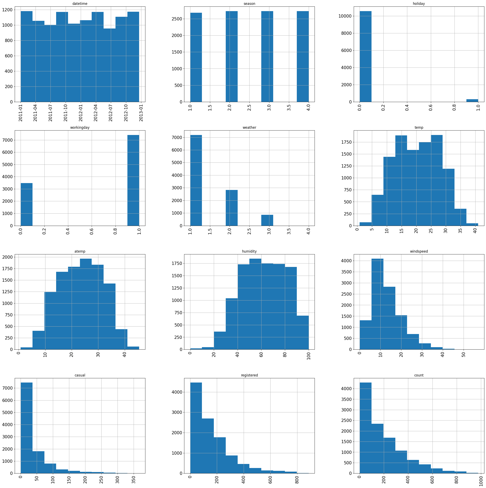
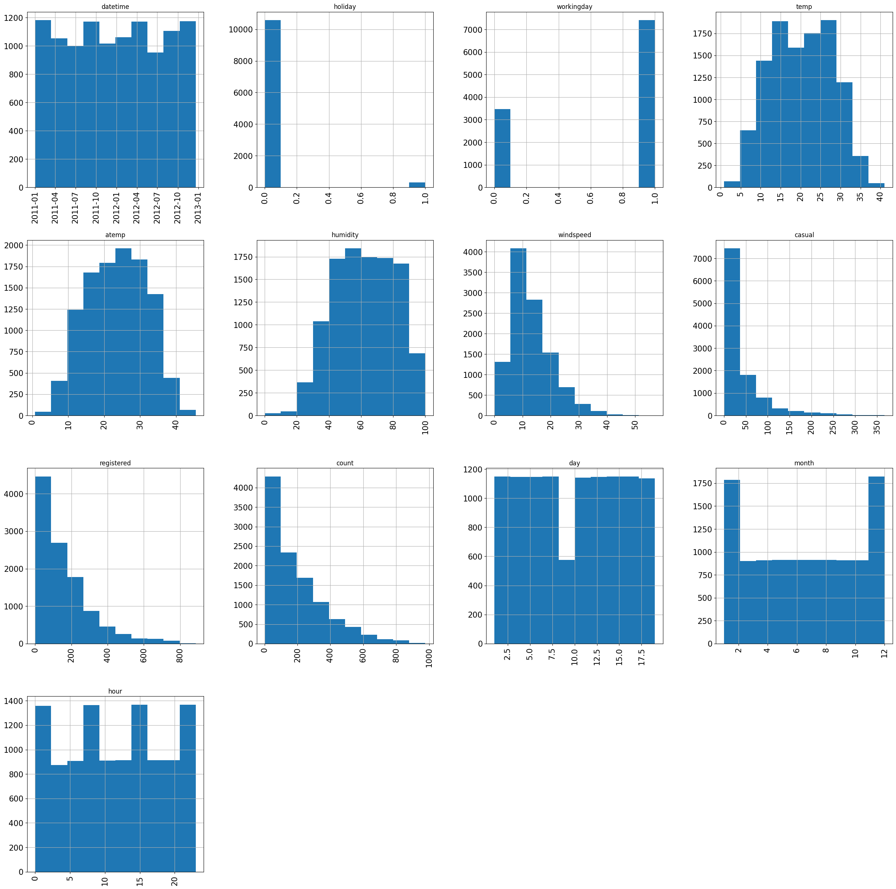
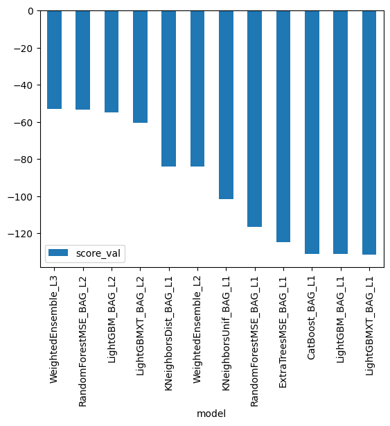
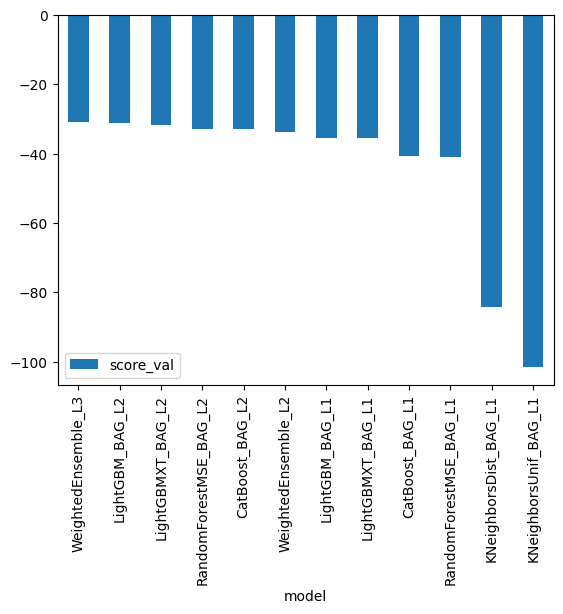
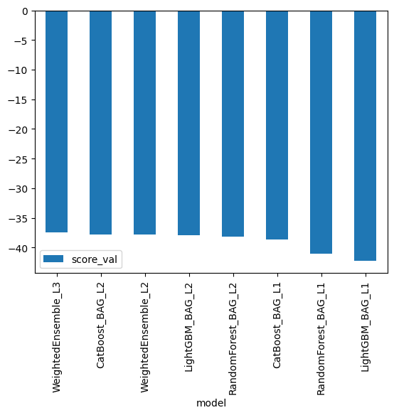
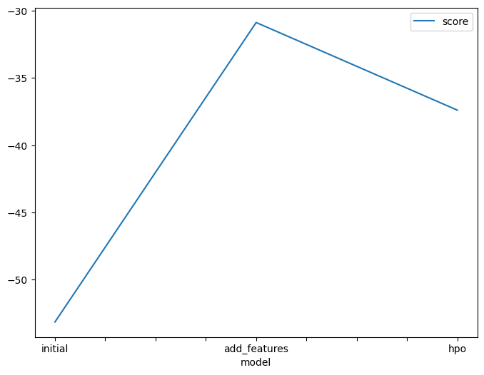
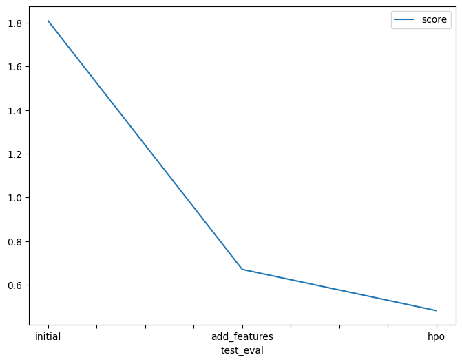

# IMPORT LIBRARIES
import os
from google.colab import drivedrive.mount('/content/drive')
os.chdir("drive/MyDrive/Udacity-bike-sharing/project")Mounted at /content/drive
This notebook is a template with each step that you need to complete for the project.
Please fill in your code where there are explicit ?
markers in the notebook. You are welcome to add more cells and code as
you see fit.
Once you have completed all the code implementations, please export your notebook as a HTML file so the reviews can view your code. Make sure you have all outputs correctly outputted.
File-> Export Notebook As... -> Export Notebook as HTML
There is a writeup to complete as well after all code implememtation is done. Please answer all questions and attach the necessary tables and charts. You can complete the writeup in either markdown or PDF.
Completing the code template and writeup template will cover all of the rubric points for this project.
The rubric contains "Stand Out Suggestions" for enhancing the project beyond the minimum requirements. The stand out suggestions are optional. If you decide to pursue the "stand out suggestions", you can include the code in this notebook and also discuss the results in the writeup file.
Below is example of steps to get the API username and key. Each student will have their own username and key.
kaggle.json and use the username and key.
ml.t3.medium instance (2
vCPU + 4 GiB)Python 3 (MXNet 1.8 Python 3.7 CPU Optimized)!pip install -U pip
!pip install -U setuptools wheel
!pip install -U "mxnet<2.0.0" bokeh==2.0.1
# !pip install mxnet-cu102 # GPU version
# !pip install mxnet # CPU version
!pip install autogluon --no-cache-dir
# Without --no-cache-dir, smaller aws instances may have trouble installingLooking in indexes: https://pypi.org/simple, https://us-python.pkg.dev/colab-wheels/public/simple/
Collecting autogluon
Downloading autogluon-0.7.0-py3-none-any.whl (9.7 kB)
Collecting autogluon.core[all]==0.7.0 (from autogluon)
Downloading autogluon.core-0.7.0-py3-none-any.whl (218 kB)
━━━━━━━━━━━━━━━━━━━━━━━━━━━━━━━━━━━━━━━ 218.3/218.3 kB 4.0 MB/s eta 0:00:00
autogluon)
Downloading autogluon.features-0.7.0-py3-none-any.whl (60 kB)
━━━━━━━━━━━━━━━━━━━━━━━━━━━━━━━━━━━━━━━ 60.1/60.1 kB 160.5 MB/s eta 0:00:00
autogluon)
Downloading autogluon.tabular-0.7.0-py3-none-any.whl (292 kB)
━━━━━━━━━━━━━━━━━━━━━━━━━━━━━━━━━━━━━━ 292.2/292.2 kB 14.3 MB/s eta 0:00:00
ultimodal==0.7.0 (from autogluon)
Downloading autogluon.multimodal-0.7.0-py3-none-any.whl (331 kB)
━━━━━━━━━━━━━━━━━━━━━━━━━━━━━━━━━━━━━ 331.1/331.1 kB 134.2 MB/s eta 0:00:00
eseries[all]==0.7.0 (from autogluon)
Downloading autogluon.timeseries-0.7.0-py3-none-any.whl (108 kB)
━━━━━━━━━━━━━━━━━━━━━━━━━━━━━━━━━━━━━ 108.7/108.7 kB 265.7 MB/s eta 0:00:00
ent already satisfied: numpy<1.27,>=1.21 in /usr/local/lib/python3.10/dist-packages (from autogluon.core[all]==0.7.0->autogluon) (1.22.4)
Requirement already satisfied: scipy<1.12,>=1.5.4 in /usr/local/lib/python3.10/dist-packages (from autogluon.core[all]==0.7.0->autogluon) (1.10.1)
Requirement already satisfied: scikit-learn<1.3,>=1.0 in /usr/local/lib/python3.10/dist-packages (from autogluon.core[all]==0.7.0->autogluon) (1.2.2)
Collecting networkx<3.0,>=2.3 (from autogluon.core[all]==0.7.0->autogluon)
Downloading networkx-2.8.8-py3-none-any.whl (2.0 MB)
━━━━━━━━━━━━━━━━━━━━━━━━━━━━━━━━━━━━━━━━ 2.0/2.0 MB 47.5 MB/s eta 0:00:00
ent already satisfied: pandas<1.6,>=1.4.1 in /usr/local/lib/python3.10/dist-packages (from autogluon.core[all]==0.7.0->autogluon) (1.5.3)
Requirement already satisfied: tqdm<5,>=4.38 in /usr/local/lib/python3.10/dist-packages (from autogluon.core[all]==0.7.0->autogluon) (4.65.0)
Requirement already satisfied: requests in /usr/local/lib/python3.10/dist-packages (from autogluon.core[all]==0.7.0->autogluon) (2.27.1)
Requirement already satisfied: matplotlib in /usr/local/lib/python3.10/dist-packages (from autogluon.core[all]==0.7.0->autogluon) (3.7.1)
Collecting boto3<2,>=1.10 (from autogluon.core[all]==0.7.0->autogluon)
Downloading boto3-1.26.148-py3-none-any.whl (135 kB)
━━━━━━━━━━━━━━━━━━━━━━━━━━━━━━━━━━━━━ 135.6/135.6 kB 269.8 MB/s eta 0:00:00
mon==0.7.0 (from autogluon.core[all]==0.7.0->autogluon)
Downloading autogluon.common-0.7.0-py3-none-any.whl (45 kB)
━━━━━━━━━━━━━━━━━━━━━━━━━━━━━━━━━━━━━━━ 45.0/45.0 kB 209.4 MB/s eta 0:00:00
ent already satisfied: hyperopt<0.2.8,>=0.2.7 in /usr/local/lib/python3.10/dist-packages (from autogluon.core[all]==0.7.0->autogluon) (0.2.7)
Collecting ray[tune]<2.3,>=2.2 (from autogluon.core[all]==0.7.0->autogluon)
Downloading ray-2.2.0-cp310-cp310-manylinux2014_x86_64.whl (57.4 MB)
━━━━━━━━━━━━━━━━━━━━━━━━━━━━━━━━━━━━━━━ 57.4/57.4 MB 127.8 MB/s eta 0:00:00
autogluon.multimodal==0.7.0->autogluon)
Downloading Pillow-9.5.0-cp310-cp310-manylinux_2_28_x86_64.whl (3.4 MB)
━━━━━━━━━━━━━━━━━━━━━━━━━━━━━━━━━━━━━━━━ 3.4/3.4 MB 143.7 MB/s eta 0:00:00
a<4.18,>=4.14 (from autogluon.multimodal==0.7.0->autogluon)
Downloading jsonschema-4.17.3-py3-none-any.whl (90 kB)
━━━━━━━━━━━━━━━━━━━━━━━━━━━━━━━━━━━━━━━ 90.4/90.4 kB 174.2 MB/s eta 0:00:00
autogluon.multimodal==0.7.0->autogluon)
Downloading seqeval-1.2.2.tar.gz (43 kB)
━━━━━━━━━━━━━━━━━━━━━━━━━━━━━━━━━━━━━━━ 43.6/43.6 kB 192.4 MB/s eta 0:00:00
etadata (setup.py) ... autogluon.multimodal==0.7.0->autogluon)
Downloading evaluate-0.3.0-py3-none-any.whl (72 kB)
━━━━━━━━━━━━━━━━━━━━━━━━━━━━━━━━━━━━━━━ 72.9/72.9 kB 223.3 MB/s eta 0:00:00
autogluon.multimodal==0.7.0->autogluon)
Downloading accelerate-0.16.0-py3-none-any.whl (199 kB)
━━━━━━━━━━━━━━━━━━━━━━━━━━━━━━━━━━━━━ 199.7/199.7 kB 279.2 MB/s eta 0:00:00
m<0.7.0,>=0.6.12 (from autogluon.multimodal==0.7.0->autogluon)
Downloading timm-0.6.13-py3-none-any.whl (549 kB)
━━━━━━━━━━━━━━━━━━━━━━━━━━━━━━━━━━━━━ 549.1/549.1 kB 324.7 MB/s eta 0:00:00
autogluon.multimodal==0.7.0->autogluon)
Downloading torch-1.13.1-cp310-cp310-manylinux1_x86_64.whl (887.5 MB)
━━━━━━━━━━━━━━━━━━━━━━━━━━━━━━━━━━━━━ 887.5/887.5 MB 122.5 MB/s eta 0:00:00
autogluon.multimodal==0.7.0->autogluon)
Downloading torchvision-0.14.1-cp310-cp310-manylinux1_x86_64.whl (24.2 MB)
━━━━━━━━━━━━━━━━━━━━━━━━━━━━━━━━━━━━━━━ 24.2/24.2 MB 112.1 MB/s eta 0:00:00
autogluon.multimodal==0.7.0->autogluon)
Downloading fairscale-0.4.13.tar.gz (266 kB)
━━━━━━━━━━━━━━━━━━━━━━━━━━━━━━━━━━━━━ 266.3/266.3 kB 200.8 MB/s eta 0:00:00
ents to build wheel ... etadata (pyproject.toml) ... ent already satisfied: scikit-image<0.20.0,>=0.19.1 in /usr/local/lib/python3.10/dist-packages (from autogluon.multimodal==0.7.0->autogluon) (0.19.3)
Collecting pytorch-lightning<1.10.0,>=1.9.0 (from autogluon.multimodal==0.7.0->autogluon)
Downloading pytorch_lightning-1.9.5-py3-none-any.whl (829 kB)
━━━━━━━━━━━━━━━━━━━━━━━━━━━━━━━━━━━━━ 829.5/829.5 kB 340.2 MB/s eta 0:00:00
ent already satisfied: text-unidecode<1.4,>=1.3 in /usr/local/lib/python3.10/dist-packages (from autogluon.multimodal==0.7.0->autogluon) (1.3)
Collecting torchmetrics<0.9.0,>=0.8.0 (from autogluon.multimodal==0.7.0->autogluon)
Downloading torchmetrics-0.8.2-py3-none-any.whl (409 kB)
━━━━━━━━━━━━━━━━━━━━━━━━━━━━━━━━━━━━━ 409.8/409.8 kB 317.3 MB/s eta 0:00:00
ers<4.27.0,>=4.23.0 (from autogluon.multimodal==0.7.0->autogluon)
Downloading transformers-4.26.1-py3-none-any.whl (6.3 MB)
━━━━━━━━━━━━━━━━━━━━━━━━━━━━━━━━━━━━━━━━ 6.3/6.3 MB 132.6 MB/s eta 0:00:00
autogluon.multimodal==0.7.0->autogluon)
Downloading nptyping-2.4.1-py3-none-any.whl (36 kB)
Collecting omegaconf<2.3.0,>=2.1.1 (from autogluon.multimodal==0.7.0->autogluon)
Downloading omegaconf-2.2.3-py3-none-any.whl (79 kB)
━━━━━━━━━━━━━━━━━━━━━━━━━━━━━━━━━━━━━━━ 79.3/79.3 kB 253.3 MB/s eta 0:00:00
autogluon.multimodal==0.7.0->autogluon)
Downloading sentencepiece-0.1.99-cp310-cp310-manylinux_2_17_x86_64.manylinux2014_x86_64.whl (1.3 MB)
━━━━━━━━━━━━━━━━━━━━━━━━━━━━━━━━━━━━━━━━ 1.3/1.3 MB 338.7 MB/s eta 0:00:00
etric-learning<2.0,>=1.3.0 (from autogluon.multimodal==0.7.0->autogluon)
Downloading pytorch_metric_learning-1.7.3-py3-none-any.whl (112 kB)
━━━━━━━━━━━━━━━━━━━━━━━━━━━━━━━━━━━━━ 112.2/112.2 kB 247.6 MB/s eta 0:00:00
autogluon.multimodal==0.7.0->autogluon)
Downloading nlpaug-1.1.11-py3-none-any.whl (410 kB)
━━━━━━━━━━━━━━━━━━━━━━━━━━━━━━━━━━━━━ 410.5/410.5 kB 302.0 MB/s eta 0:00:00
ent already satisfied: nltk<4.0.0,>=3.4.5 in /usr/local/lib/python3.10/dist-packages (from autogluon.multimodal==0.7.0->autogluon) (3.8.1)
Collecting openmim<0.4.0,>0.1.5 (from autogluon.multimodal==0.7.0->autogluon)
Downloading openmim-0.3.7-py2.py3-none-any.whl (51 kB)
━━━━━━━━━━━━━━━━━━━━━━━━━━━━━━━━━━━━━━━ 51.3/51.3 kB 148.2 MB/s eta 0:00:00
ent already satisfied: defusedxml<0.7.2,>=0.7.1 in /usr/local/lib/python3.10/dist-packages (from autogluon.multimodal==0.7.0->autogluon) (0.7.1)
Requirement already satisfied: jinja2<3.2,>=3.0.3 in /usr/local/lib/python3.10/dist-packages (from autogluon.multimodal==0.7.0->autogluon) (3.1.2)
Requirement already satisfied: tensorboard<3,>=2.9 in /usr/local/lib/python3.10/dist-packages (from autogluon.multimodal==0.7.0->autogluon) (2.12.2)
Collecting pytesseract<0.3.11,>=0.3.9 (from autogluon.multimodal==0.7.0->autogluon)
Downloading pytesseract-0.3.10-py3-none-any.whl (14 kB)
Collecting catboost<1.2,>=1.0 (from autogluon.tabular[all]==0.7.0->autogluon)
Downloading catboost-1.1.1-cp310-none-manylinux1_x86_64.whl (76.6 MB)
━━━━━━━━━━━━━━━━━━━━━━━━━━━━━━━━━━━━━━━ 76.6/76.6 MB 121.8 MB/s eta 0:00:00
ent already satisfied: lightgbm<3.4,>=3.3 in /usr/local/lib/python3.10/dist-packages (from autogluon.tabular[all]==0.7.0->autogluon) (3.3.5)
Requirement already satisfied: xgboost<1.8,>=1.6 in /usr/local/lib/python3.10/dist-packages (from autogluon.tabular[all]==0.7.0->autogluon) (1.7.5)
Requirement already satisfied: fastai<2.8,>=2.3.1 in /usr/local/lib/python3.10/dist-packages (from autogluon.tabular[all]==0.7.0->autogluon) (2.7.12)
Requirement already satisfied: joblib<2,>=1.1 in /usr/local/lib/python3.10/dist-packages (from autogluon.timeseries[all]==0.7.0->autogluon) (1.2.0)
Requirement already satisfied: statsmodels<0.14,>=0.13.0 in /usr/local/lib/python3.10/dist-packages (from autogluon.timeseries[all]==0.7.0->autogluon) (0.13.5)
Collecting gluonts<0.13,>=0.12.0 (from autogluon.timeseries[all]==0.7.0->autogluon)
Downloading gluonts-0.12.8-py3-none-any.whl (1.2 MB)
━━━━━━━━━━━━━━━━━━━━━━━━━━━━━━━━━━━━━━━━ 1.2/1.2 MB 228.7 MB/s eta 0:00:00
autogluon.timeseries[all]==0.7.0->autogluon)
Downloading statsforecast-1.4.0-py3-none-any.whl (91 kB)
━━━━━━━━━━━━━━━━━━━━━━━━━━━━━━━━━━━━━━━ 92.0/92.0 kB 186.2 MB/s eta 0:00:00
autogluon.timeseries[all]==0.7.0->autogluon)
Downloading ujson-5.7.0-cp310-cp310-manylinux_2_17_x86_64.manylinux2014_x86_64.whl (52 kB)
━━━━━━━━━━━━━━━━━━━━━━━━━━━━━━━━━━━━━━━ 52.8/52.8 kB 148.4 MB/s eta 0:00:00
e<0.16,>=0.14 (from autogluon.timeseries[all]==0.7.0->autogluon)
Downloading sktime-0.15.1-py3-none-any.whl (16.0 MB)
━━━━━━━━━━━━━━━━━━━━━━━━━━━━━━━━━━━━━━━ 16.0/16.0 MB 114.9 MB/s eta 0:00:00
autogluon.timeseries[all]==0.7.0->autogluon)
Downloading tbats-1.1.3-py3-none-any.whl (44 kB)
━━━━━━━━━━━━━━━━━━━━━━━━━━━━━━━━━━━━━━━ 44.0/44.0 kB 125.2 MB/s eta 0:00:00
darima<1.9,>=1.8.2 (from autogluon.timeseries[all]==0.7.0->autogluon)
Downloading pmdarima-1.8.5-cp310-cp310-manylinux_2_17_x86_64.manylinux2014_x86_64.manylinux_2_24_x86_64.whl (1.4 MB)
━━━━━━━━━━━━━━━━━━━━━━━━━━━━━━━━━━━━━━━━ 1.4/1.4 MB 191.6 MB/s eta 0:00:00
ent already satisfied: psutil<6,>=5.7.3 in /usr/local/lib/python3.10/dist-packages (from autogluon.common==0.7.0->autogluon.core[all]==0.7.0->autogluon) (5.9.5)
Requirement already satisfied: setuptools in /usr/local/lib/python3.10/dist-packages (from autogluon.common==0.7.0->autogluon.core[all]==0.7.0->autogluon) (67.7.2)
Requirement already satisfied: packaging>=20.0 in /usr/local/lib/python3.10/dist-packages (from accelerate<0.17,>=0.9->autogluon.multimodal==0.7.0->autogluon) (23.1)
Requirement already satisfied: pyyaml in /usr/local/lib/python3.10/dist-packages (from accelerate<0.17,>=0.9->autogluon.multimodal==0.7.0->autogluon) (6.0)
Collecting botocore<1.30.0,>=1.29.148 (from boto3<2,>=1.10->autogluon.core[all]==0.7.0->autogluon)
Downloading botocore-1.29.148-py3-none-any.whl (10.8 MB)
━━━━━━━━━━━━━━━━━━━━━━━━━━━━━━━━━━━━━━━ 10.8/10.8 MB 114.0 MB/s eta 0:00:00
espath<2.0.0,>=0.7.1 (from boto3<2,>=1.10->autogluon.core[all]==0.7.0->autogluon)
Downloading jmespath-1.0.1-py3-none-any.whl (20 kB)
Collecting s3transfer<0.7.0,>=0.6.0 (from boto3<2,>=1.10->autogluon.core[all]==0.7.0->autogluon)
Downloading s3transfer-0.6.1-py3-none-any.whl (79 kB)
━━━━━━━━━━━━━━━━━━━━━━━━━━━━━━━━━━━━━━━ 79.8/79.8 kB 265.1 MB/s eta 0:00:00
ent already satisfied: graphviz in /usr/local/lib/python3.10/dist-packages (from catboost<1.2,>=1.0->autogluon.tabular[all]==0.7.0->autogluon) (0.20.1)
Requirement already satisfied: plotly in /usr/local/lib/python3.10/dist-packages (from catboost<1.2,>=1.0->autogluon.tabular[all]==0.7.0->autogluon) (5.13.1)
Requirement already satisfied: six in /usr/local/lib/python3.10/dist-packages (from catboost<1.2,>=1.0->autogluon.tabular[all]==0.7.0->autogluon) (1.16.0)
Collecting datasets>=2.0.0 (from evaluate<0.4.0,>=0.2.2->autogluon.multimodal==0.7.0->autogluon)
Downloading datasets-2.12.0-py3-none-any.whl (474 kB)
━━━━━━━━━━━━━━━━━━━━━━━━━━━━━━━━━━━━━ 474.6/474.6 kB 269.3 MB/s eta 0:00:00
evaluate<0.4.0,>=0.2.2->autogluon.multimodal==0.7.0->autogluon)
Downloading dill-0.3.6-py3-none-any.whl (110 kB)
━━━━━━━━━━━━━━━━━━━━━━━━━━━━━━━━━━━━━ 110.5/110.5 kB 289.5 MB/s eta 0:00:00
evaluate<0.4.0,>=0.2.2->autogluon.multimodal==0.7.0->autogluon)
Downloading xxhash-3.2.0-cp310-cp310-manylinux_2_17_x86_64.manylinux2014_x86_64.whl (212 kB)
━━━━━━━━━━━━━━━━━━━━━━━━━━━━━━━━━━━━━ 212.5/212.5 kB 304.9 MB/s eta 0:00:00
ultiprocess (from evaluate<0.4.0,>=0.2.2->autogluon.multimodal==0.7.0->autogluon)
Downloading multiprocess-0.70.14-py310-none-any.whl (134 kB)
━━━━━━━━━━━━━━━━━━━━━━━━━━━━━━━━━━━━━━ 134.3/134.3 kB 84.6 MB/s eta 0:00:00
ent already satisfied: fsspec[http]>=2021.05.0 in /usr/local/lib/python3.10/dist-packages (from evaluate<0.4.0,>=0.2.2->autogluon.multimodal==0.7.0->autogluon) (2023.4.0)
Collecting huggingface-hub>=0.7.0 (from evaluate<0.4.0,>=0.2.2->autogluon.multimodal==0.7.0->autogluon)
Downloading huggingface_hub-0.15.1-py3-none-any.whl (236 kB)
━━━━━━━━━━━━━━━━━━━━━━━━━━━━━━━━━━━━━ 236.8/236.8 kB 316.5 MB/s eta 0:00:00
evaluate<0.4.0,>=0.2.2->autogluon.multimodal==0.7.0->autogluon)
Downloading responses-0.18.0-py3-none-any.whl (38 kB)
Requirement already satisfied: pip in /usr/local/lib/python3.10/dist-packages (from fastai<2.8,>=2.3.1->autogluon.tabular[all]==0.7.0->autogluon) (23.1.2)
Requirement already satisfied: fastdownload<2,>=0.0.5 in /usr/local/lib/python3.10/dist-packages (from fastai<2.8,>=2.3.1->autogluon.tabular[all]==0.7.0->autogluon) (0.0.7)
Requirement already satisfied: fastcore<1.6,>=1.5.29 in /usr/local/lib/python3.10/dist-packages (from fastai<2.8,>=2.3.1->autogluon.tabular[all]==0.7.0->autogluon) (1.5.29)
Requirement already satisfied: fastprogress>=0.2.4 in /usr/local/lib/python3.10/dist-packages (from fastai<2.8,>=2.3.1->autogluon.tabular[all]==0.7.0->autogluon) (1.0.3)
Requirement already satisfied: spacy<4 in /usr/local/lib/python3.10/dist-packages (from fastai<2.8,>=2.3.1->autogluon.tabular[all]==0.7.0->autogluon) (3.5.2)
Requirement already satisfied: pydantic~=1.7 in /usr/local/lib/python3.10/dist-packages (from gluonts<0.13,>=0.12.0->autogluon.timeseries[all]==0.7.0->autogluon) (1.10.7)
Requirement already satisfied: toolz~=0.10 in /usr/local/lib/python3.10/dist-packages (from gluonts<0.13,>=0.12.0->autogluon.timeseries[all]==0.7.0->autogluon) (0.12.0)
Requirement already satisfied: typing-extensions~=4.0 in /usr/local/lib/python3.10/dist-packages (from gluonts<0.13,>=0.12.0->autogluon.timeseries[all]==0.7.0->autogluon) (4.5.0)
Requirement already satisfied: future in /usr/local/lib/python3.10/dist-packages (from hyperopt<0.2.8,>=0.2.7->autogluon.core[all]==0.7.0->autogluon) (0.18.3)
Requirement already satisfied: cloudpickle in /usr/local/lib/python3.10/dist-packages (from hyperopt<0.2.8,>=0.2.7->autogluon.core[all]==0.7.0->autogluon) (2.2.1)
Requirement already satisfied: py4j in /usr/local/lib/python3.10/dist-packages (from hyperopt<0.2.8,>=0.2.7->autogluon.core[all]==0.7.0->autogluon) (0.10.9.7)
Requirement already satisfied: MarkupSafe>=2.0 in /usr/local/lib/python3.10/dist-packages (from jinja2<3.2,>=3.0.3->autogluon.multimodal==0.7.0->autogluon) (2.1.2)
Requirement already satisfied: attrs>=17.4.0 in /usr/local/lib/python3.10/dist-packages (from jsonschema<4.18,>=4.14->autogluon.multimodal==0.7.0->autogluon) (23.1.0)
Requirement already satisfied: pyrsistent!=0.17.0,!=0.17.1,!=0.17.2,>=0.14.0 in /usr/local/lib/python3.10/dist-packages (from jsonschema<4.18,>=4.14->autogluon.multimodal==0.7.0->autogluon) (0.19.3)
Requirement already satisfied: wheel in /usr/local/lib/python3.10/dist-packages (from lightgbm<3.4,>=3.3->autogluon.tabular[all]==0.7.0->autogluon) (0.40.0)
Requirement already satisfied: gdown>=4.0.0 in /usr/local/lib/python3.10/dist-packages (from nlpaug<1.2.0,>=1.1.10->autogluon.multimodal==0.7.0->autogluon) (4.6.6)
Requirement already satisfied: click in /usr/local/lib/python3.10/dist-packages (from nltk<4.0.0,>=3.4.5->autogluon.multimodal==0.7.0->autogluon) (8.1.3)
Requirement already satisfied: regex>=2021.8.3 in /usr/local/lib/python3.10/dist-packages (from nltk<4.0.0,>=3.4.5->autogluon.multimodal==0.7.0->autogluon) (2022.10.31)
Collecting antlr4-python3-runtime==4.9.* (from omegaconf<2.3.0,>=2.1.1->autogluon.multimodal==0.7.0->autogluon)
Downloading antlr4-python3-runtime-4.9.3.tar.gz (117 kB)
━━━━━━━━━━━━━━━━━━━━━━━━━━━━━━━━━━━━━ 117.0/117.0 kB 258.6 MB/s eta 0:00:00
etadata (setup.py) ... a (from openmim<0.4.0,>0.1.5->autogluon.multimodal==0.7.0->autogluon)
Downloading colorama-0.4.6-py2.py3-none-any.whl (25 kB)
Collecting model-index (from openmim<0.4.0,>0.1.5->autogluon.multimodal==0.7.0->autogluon)
Downloading model_index-0.1.11-py3-none-any.whl (34 kB)
Requirement already satisfied: rich in /usr/local/lib/python3.10/dist-packages (from openmim<0.4.0,>0.1.5->autogluon.multimodal==0.7.0->autogluon) (13.3.4)
Requirement already satisfied: tabulate in /usr/local/lib/python3.10/dist-packages (from openmim<0.4.0,>0.1.5->autogluon.multimodal==0.7.0->autogluon) (0.8.10)
Requirement already satisfied: python-dateutil>=2.8.1 in /usr/local/lib/python3.10/dist-packages (from pandas<1.6,>=1.4.1->autogluon.core[all]==0.7.0->autogluon) (2.8.2)
Requirement already satisfied: pytz>=2020.1 in /usr/local/lib/python3.10/dist-packages (from pandas<1.6,>=1.4.1->autogluon.core[all]==0.7.0->autogluon) (2022.7.1)
Requirement already satisfied: Cython!=0.29.18,>=0.29 in /usr/local/lib/python3.10/dist-packages (from pmdarima<1.9,>=1.8.2->autogluon.timeseries[all]==0.7.0->autogluon) (0.29.34)
Requirement already satisfied: urllib3 in /usr/local/lib/python3.10/dist-packages (from pmdarima<1.9,>=1.8.2->autogluon.timeseries[all]==0.7.0->autogluon) (1.26.15)
Collecting lightning-utilities>=0.6.0.post0 (from pytorch-lightning<1.10.0,>=1.9.0->autogluon.multimodal==0.7.0->autogluon)
Downloading lightning_utilities-0.8.0-py3-none-any.whl (20 kB)
Requirement already satisfied: filelock in /usr/local/lib/python3.10/dist-packages (from ray[tune]<2.3,>=2.2->autogluon.core[all]==0.7.0->autogluon) (3.12.0)
Requirement already satisfied: msgpack<2.0.0,>=1.0.0 in /usr/local/lib/python3.10/dist-packages (from ray[tune]<2.3,>=2.2->autogluon.core[all]==0.7.0->autogluon) (1.0.5)
Requirement already satisfied: protobuf!=3.19.5,>=3.15.3 in /usr/local/lib/python3.10/dist-packages (from ray[tune]<2.3,>=2.2->autogluon.core[all]==0.7.0->autogluon) (3.20.3)
Collecting aiosignal (from ray[tune]<2.3,>=2.2->autogluon.core[all]==0.7.0->autogluon)
Downloading aiosignal-1.3.1-py3-none-any.whl (7.6 kB)
Collecting frozenlist (from ray[tune]<2.3,>=2.2->autogluon.core[all]==0.7.0->autogluon)
Downloading frozenlist-1.3.3-cp310-cp310-manylinux_2_5_x86_64.manylinux1_x86_64.manylinux_2_17_x86_64.manylinux2014_x86_64.whl (149 kB)
━━━━━━━━━━━━━━━━━━━━━━━━━━━━━━━━━━━━━ 149.6/149.6 kB 297.9 MB/s eta 0:00:00
ray[tune]<2.3,>=2.2->autogluon.core[all]==0.7.0->autogluon)
Downloading virtualenv-20.23.0-py3-none-any.whl (3.3 MB)
━━━━━━━━━━━━━━━━━━━━━━━━━━━━━━━━━━━━━━━━ 3.3/3.3 MB 170.2 MB/s eta 0:00:00
ent already satisfied: grpcio>=1.42.0 in /usr/local/lib/python3.10/dist-packages (from ray[tune]<2.3,>=2.2->autogluon.core[all]==0.7.0->autogluon) (1.54.0)
Collecting tensorboardX>=1.9 (from ray[tune]<2.3,>=2.2->autogluon.core[all]==0.7.0->autogluon)
Downloading tensorboardX-2.6-py2.py3-none-any.whl (114 kB)
━━━━━━━━━━━━━━━━━━━━━━━━━━━━━━━━━━━━━ 114.5/114.5 kB 264.5 MB/s eta 0:00:00
ent already satisfied: certifi>=2017.4.17 in /usr/local/lib/python3.10/dist-packages (from requests->autogluon.core[all]==0.7.0->autogluon) (2022.12.7)
Requirement already satisfied: charset-normalizer~=2.0.0 in /usr/local/lib/python3.10/dist-packages (from requests->autogluon.core[all]==0.7.0->autogluon) (2.0.12)
Requirement already satisfied: idna<4,>=2.5 in /usr/local/lib/python3.10/dist-packages (from requests->autogluon.core[all]==0.7.0->autogluon) (3.4)
Requirement already satisfied: imageio>=2.4.1 in /usr/local/lib/python3.10/dist-packages (from scikit-image<0.20.0,>=0.19.1->autogluon.multimodal==0.7.0->autogluon) (2.25.1)
Requirement already satisfied: tifffile>=2019.7.26 in /usr/local/lib/python3.10/dist-packages (from scikit-image<0.20.0,>=0.19.1->autogluon.multimodal==0.7.0->autogluon) (2023.4.12)
Requirement already satisfied: PyWavelets>=1.1.1 in /usr/local/lib/python3.10/dist-packages (from scikit-image<0.20.0,>=0.19.1->autogluon.multimodal==0.7.0->autogluon) (1.4.1)
Requirement already satisfied: threadpoolctl>=2.0.0 in /usr/local/lib/python3.10/dist-packages (from scikit-learn<1.3,>=1.0->autogluon.core[all]==0.7.0->autogluon) (3.1.0)
Collecting deprecated>=1.2.13 (from sktime<0.16,>=0.14->autogluon.timeseries[all]==0.7.0->autogluon)
Downloading Deprecated-1.2.14-py2.py3-none-any.whl (9.6 kB)
Requirement already satisfied: numba>=0.55 in /usr/local/lib/python3.10/dist-packages (from sktime<0.16,>=0.14->autogluon.timeseries[all]==0.7.0->autogluon) (0.56.4)
Requirement already satisfied: patsy>=0.5.2 in /usr/local/lib/python3.10/dist-packages (from statsmodels<0.14,>=0.13.0->autogluon.timeseries[all]==0.7.0->autogluon) (0.5.3)
Requirement already satisfied: absl-py>=0.4 in /usr/local/lib/python3.10/dist-packages (from tensorboard<3,>=2.9->autogluon.multimodal==0.7.0->autogluon) (1.4.0)
Requirement already satisfied: google-auth<3,>=1.6.3 in /usr/local/lib/python3.10/dist-packages (from tensorboard<3,>=2.9->autogluon.multimodal==0.7.0->autogluon) (2.17.3)
Requirement already satisfied: google-auth-oauthlib<1.1,>=0.5 in /usr/local/lib/python3.10/dist-packages (from tensorboard<3,>=2.9->autogluon.multimodal==0.7.0->autogluon) (1.0.0)
Requirement already satisfied: markdown>=2.6.8 in /usr/local/lib/python3.10/dist-packages (from tensorboard<3,>=2.9->autogluon.multimodal==0.7.0->autogluon) (3.4.3)
Requirement already satisfied: tensorboard-data-server<0.8.0,>=0.7.0 in /usr/local/lib/python3.10/dist-packages (from tensorboard<3,>=2.9->autogluon.multimodal==0.7.0->autogluon) (0.7.0)
Requirement already satisfied: tensorboard-plugin-wit>=1.6.0 in /usr/local/lib/python3.10/dist-packages (from tensorboard<3,>=2.9->autogluon.multimodal==0.7.0->autogluon) (1.8.1)
Requirement already satisfied: werkzeug>=1.0.1 in /usr/local/lib/python3.10/dist-packages (from tensorboard<3,>=2.9->autogluon.multimodal==0.7.0->autogluon) (2.3.0)
Collecting nvidia-cuda-runtime-cu11==11.7.99 (from torch<1.14,>=1.9->autogluon.multimodal==0.7.0->autogluon)
Downloading nvidia_cuda_runtime_cu11-11.7.99-py3-none-manylinux1_x86_64.whl (849 kB)
━━━━━━━━━━━━━━━━━━━━━━━━━━━━━━━━━━━━━ 849.3/849.3 kB 283.8 MB/s eta 0:00:00
torch<1.14,>=1.9->autogluon.multimodal==0.7.0->autogluon)
Downloading nvidia_cudnn_cu11-8.5.0.96-2-py3-none-manylinux1_x86_64.whl (557.1 MB)
━━━━━━━━━━━━━━━━━━━━━━━━━━━━━━━━━━━━━━ 557.1/557.1 MB 74.3 MB/s eta 0:00:00
torch<1.14,>=1.9->autogluon.multimodal==0.7.0->autogluon)
Downloading nvidia_cublas_cu11-11.10.3.66-py3-none-manylinux1_x86_64.whl (317.1 MB)
━━━━━━━━━━━━━━━━━━━━━━━━━━━━━━━━━━━━━ 317.1/317.1 MB 120.8 MB/s eta 0:00:00
torch<1.14,>=1.9->autogluon.multimodal==0.7.0->autogluon)
Downloading nvidia_cuda_nvrtc_cu11-11.7.99-2-py3-none-manylinux1_x86_64.whl (21.0 MB)
━━━━━━━━━━━━━━━━━━━━━━━━━━━━━━━━━━━━━━━ 21.0/21.0 MB 111.5 MB/s eta 0:00:00
torchmetrics<0.9.0,>=0.8.0->autogluon.multimodal==0.7.0->autogluon)
Downloading pyDeprecate-0.3.2-py3-none-any.whl (10 kB)
Collecting tokenizers!=0.11.3,<0.14,>=0.11.1 (from transformers<4.27.0,>=4.23.0->autogluon.multimodal==0.7.0->autogluon)
Downloading tokenizers-0.13.3-cp310-cp310-manylinux_2_17_x86_64.manylinux2014_x86_64.whl (7.8 MB)
━━━━━━━━━━━━━━━━━━━━━━━━━━━━━━━━━━━━━━━━ 7.8/7.8 MB 117.8 MB/s eta 0:00:00
ent already satisfied: contourpy>=1.0.1 in /usr/local/lib/python3.10/dist-packages (from matplotlib->autogluon.core[all]==0.7.0->autogluon) (1.0.7)
Requirement already satisfied: cycler>=0.10 in /usr/local/lib/python3.10/dist-packages (from matplotlib->autogluon.core[all]==0.7.0->autogluon) (0.11.0)
Requirement already satisfied: fonttools>=4.22.0 in /usr/local/lib/python3.10/dist-packages (from matplotlib->autogluon.core[all]==0.7.0->autogluon) (4.39.3)
Requirement already satisfied: kiwisolver>=1.0.1 in /usr/local/lib/python3.10/dist-packages (from matplotlib->autogluon.core[all]==0.7.0->autogluon) (1.4.4)
Requirement already satisfied: pyparsing>=2.3.1 in /usr/local/lib/python3.10/dist-packages (from matplotlib->autogluon.core[all]==0.7.0->autogluon) (3.0.9)
Requirement already satisfied: pyarrow>=8.0.0 in /usr/local/lib/python3.10/dist-packages (from datasets>=2.0.0->evaluate<0.4.0,>=0.2.2->autogluon.multimodal==0.7.0->autogluon) (9.0.0)
Collecting aiohttp (from datasets>=2.0.0->evaluate<0.4.0,>=0.2.2->autogluon.multimodal==0.7.0->autogluon)
Downloading aiohttp-3.8.4-cp310-cp310-manylinux_2_17_x86_64.manylinux2014_x86_64.whl (1.0 MB)
━━━━━━━━━━━━━━━━━━━━━━━━━━━━━━━━━━━━━━━━ 1.0/1.0 MB 342.7 MB/s eta 0:00:00
ent already satisfied: wrapt<2,>=1.10 in /usr/local/lib/python3.10/dist-packages (from deprecated>=1.2.13->sktime<0.16,>=0.14->autogluon.timeseries[all]==0.7.0->autogluon) (1.14.1)
Requirement already satisfied: beautifulsoup4 in /usr/local/lib/python3.10/dist-packages (from gdown>=4.0.0->nlpaug<1.2.0,>=1.1.10->autogluon.multimodal==0.7.0->autogluon) (4.11.2)
Requirement already satisfied: cachetools<6.0,>=2.0.0 in /usr/local/lib/python3.10/dist-packages (from google-auth<3,>=1.6.3->tensorboard<3,>=2.9->autogluon.multimodal==0.7.0->autogluon) (5.3.0)
Requirement already satisfied: pyasn1-modules>=0.2.1 in /usr/local/lib/python3.10/dist-packages (from google-auth<3,>=1.6.3->tensorboard<3,>=2.9->autogluon.multimodal==0.7.0->autogluon) (0.3.0)
Requirement already satisfied: rsa<5,>=3.1.4 in /usr/local/lib/python3.10/dist-packages (from google-auth<3,>=1.6.3->tensorboard<3,>=2.9->autogluon.multimodal==0.7.0->autogluon) (4.9)
Requirement already satisfied: requests-oauthlib>=0.7.0 in /usr/local/lib/python3.10/dist-packages (from google-auth-oauthlib<1.1,>=0.5->tensorboard<3,>=2.9->autogluon.multimodal==0.7.0->autogluon) (1.3.1)
Requirement already satisfied: llvmlite<0.40,>=0.39.0dev0 in /usr/local/lib/python3.10/dist-packages (from numba>=0.55->sktime<0.16,>=0.14->autogluon.timeseries[all]==0.7.0->autogluon) (0.39.1)
Requirement already satisfied: spacy-legacy<3.1.0,>=3.0.11 in /usr/local/lib/python3.10/dist-packages (from spacy<4->fastai<2.8,>=2.3.1->autogluon.tabular[all]==0.7.0->autogluon) (3.0.12)
Requirement already satisfied: spacy-loggers<2.0.0,>=1.0.0 in /usr/local/lib/python3.10/dist-packages (from spacy<4->fastai<2.8,>=2.3.1->autogluon.tabular[all]==0.7.0->autogluon) (1.0.4)
Requirement already satisfied: murmurhash<1.1.0,>=0.28.0 in /usr/local/lib/python3.10/dist-packages (from spacy<4->fastai<2.8,>=2.3.1->autogluon.tabular[all]==0.7.0->autogluon) (1.0.9)
Requirement already satisfied: cymem<2.1.0,>=2.0.2 in /usr/local/lib/python3.10/dist-packages (from spacy<4->fastai<2.8,>=2.3.1->autogluon.tabular[all]==0.7.0->autogluon) (2.0.7)
Requirement already satisfied: preshed<3.1.0,>=3.0.2 in /usr/local/lib/python3.10/dist-packages (from spacy<4->fastai<2.8,>=2.3.1->autogluon.tabular[all]==0.7.0->autogluon) (3.0.8)
Requirement already satisfied: thinc<8.2.0,>=8.1.8 in /usr/local/lib/python3.10/dist-packages (from spacy<4->fastai<2.8,>=2.3.1->autogluon.tabular[all]==0.7.0->autogluon) (8.1.9)
Requirement already satisfied: wasabi<1.2.0,>=0.9.1 in /usr/local/lib/python3.10/dist-packages (from spacy<4->fastai<2.8,>=2.3.1->autogluon.tabular[all]==0.7.0->autogluon) (1.1.1)
Requirement already satisfied: srsly<3.0.0,>=2.4.3 in /usr/local/lib/python3.10/dist-packages (from spacy<4->fastai<2.8,>=2.3.1->autogluon.tabular[all]==0.7.0->autogluon) (2.4.6)
Requirement already satisfied: catalogue<2.1.0,>=2.0.6 in /usr/local/lib/python3.10/dist-packages (from spacy<4->fastai<2.8,>=2.3.1->autogluon.tabular[all]==0.7.0->autogluon) (2.0.8)
Requirement already satisfied: typer<0.8.0,>=0.3.0 in /usr/local/lib/python3.10/dist-packages (from spacy<4->fastai<2.8,>=2.3.1->autogluon.tabular[all]==0.7.0->autogluon) (0.7.0)
Requirement already satisfied: pathy>=0.10.0 in /usr/local/lib/python3.10/dist-packages (from spacy<4->fastai<2.8,>=2.3.1->autogluon.tabular[all]==0.7.0->autogluon) (0.10.1)
Requirement already satisfied: smart-open<7.0.0,>=5.2.1 in /usr/local/lib/python3.10/dist-packages (from spacy<4->fastai<2.8,>=2.3.1->autogluon.tabular[all]==0.7.0->autogluon) (6.3.0)
Requirement already satisfied: langcodes<4.0.0,>=3.2.0 in /usr/local/lib/python3.10/dist-packages (from spacy<4->fastai<2.8,>=2.3.1->autogluon.tabular[all]==0.7.0->autogluon) (3.3.0)
Collecting distlib<1,>=0.3.6 (from virtualenv>=20.0.24->ray[tune]<2.3,>=2.2->autogluon.core[all]==0.7.0->autogluon)
Downloading distlib-0.3.6-py2.py3-none-any.whl (468 kB)
━━━━━━━━━━━━━━━━━━━━━━━━━━━━━━━━━━━━━ 468.5/468.5 kB 247.4 MB/s eta 0:00:00
ent already satisfied: platformdirs<4,>=3.2 in /usr/local/lib/python3.10/dist-packages (from virtualenv>=20.0.24->ray[tune]<2.3,>=2.2->autogluon.core[all]==0.7.0->autogluon) (3.3.0)
Collecting ordered-set (from model-index->openmim<0.4.0,>0.1.5->autogluon.multimodal==0.7.0->autogluon)
Downloading ordered_set-4.1.0-py3-none-any.whl (7.6 kB)
Requirement already satisfied: tenacity>=6.2.0 in /usr/local/lib/python3.10/dist-packages (from plotly->catboost<1.2,>=1.0->autogluon.tabular[all]==0.7.0->autogluon) (8.2.2)
Requirement already satisfied: markdown-it-py<3.0.0,>=2.2.0 in /usr/local/lib/python3.10/dist-packages (from rich->openmim<0.4.0,>0.1.5->autogluon.multimodal==0.7.0->autogluon) (2.2.0)
Requirement already satisfied: pygments<3.0.0,>=2.13.0 in /usr/local/lib/python3.10/dist-packages (from rich->openmim<0.4.0,>0.1.5->autogluon.multimodal==0.7.0->autogluon) (2.14.0)
Collecting multidict<7.0,>=4.5 (from aiohttp->datasets>=2.0.0->evaluate<0.4.0,>=0.2.2->autogluon.multimodal==0.7.0->autogluon)
Downloading multidict-6.0.4-cp310-cp310-manylinux_2_17_x86_64.manylinux2014_x86_64.whl (114 kB)
━━━━━━━━━━━━━━━━━━━━━━━━━━━━━━━━━━━━━━ 114.5/114.5 kB 93.6 MB/s eta 0:00:00
eout<5.0,>=4.0.0a3 (from aiohttp->datasets>=2.0.0->evaluate<0.4.0,>=0.2.2->autogluon.multimodal==0.7.0->autogluon)
Downloading async_timeout-4.0.2-py3-none-any.whl (5.8 kB)
Collecting yarl<2.0,>=1.0 (from aiohttp->datasets>=2.0.0->evaluate<0.4.0,>=0.2.2->autogluon.multimodal==0.7.0->autogluon)
Downloading yarl-1.9.2-cp310-cp310-manylinux_2_17_x86_64.manylinux2014_x86_64.whl (268 kB)
━━━━━━━━━━━━━━━━━━━━━━━━━━━━━━━━━━━━━ 268.8/268.8 kB 200.6 MB/s eta 0:00:00
ent already satisfied: mdurl~=0.1 in /usr/local/lib/python3.10/dist-packages (from markdown-it-py<3.0.0,>=2.2.0->rich->openmim<0.4.0,>0.1.5->autogluon.multimodal==0.7.0->autogluon) (0.1.2)
Requirement already satisfied: pyasn1<0.6.0,>=0.4.6 in /usr/local/lib/python3.10/dist-packages (from pyasn1-modules>=0.2.1->google-auth<3,>=1.6.3->tensorboard<3,>=2.9->autogluon.multimodal==0.7.0->autogluon) (0.5.0)
Requirement already satisfied: oauthlib>=3.0.0 in /usr/local/lib/python3.10/dist-packages (from requests-oauthlib>=0.7.0->google-auth-oauthlib<1.1,>=0.5->tensorboard<3,>=2.9->autogluon.multimodal==0.7.0->autogluon) (3.2.2)
Requirement already satisfied: blis<0.8.0,>=0.7.8 in /usr/local/lib/python3.10/dist-packages (from thinc<8.2.0,>=8.1.8->spacy<4->fastai<2.8,>=2.3.1->autogluon.tabular[all]==0.7.0->autogluon) (0.7.9)
Requirement already satisfied: confection<1.0.0,>=0.0.1 in /usr/local/lib/python3.10/dist-packages (from thinc<8.2.0,>=8.1.8->spacy<4->fastai<2.8,>=2.3.1->autogluon.tabular[all]==0.7.0->autogluon) (0.0.4)
Requirement already satisfied: soupsieve>1.2 in /usr/local/lib/python3.10/dist-packages (from beautifulsoup4->gdown>=4.0.0->nlpaug<1.2.0,>=1.1.10->autogluon.multimodal==0.7.0->autogluon) (2.4.1)
Requirement already satisfied: PySocks!=1.5.7,>=1.5.6 in /usr/local/lib/python3.10/dist-packages (from requests->autogluon.core[all]==0.7.0->autogluon) (1.7.1)
Building wheels for collected packages: fairscale, antlr4-python3-runtime, seqeval
Building wheel for fairscale (pyproject.toml) ... e=fairscale-0.4.13-py3-none-any.whl size=332112 sha256=45d40de583455b69e96f441e67d2457d079d2aaf751c13f2d3a585a23e9b6555
Stored in directory: /tmp/pip-ephem-wheel-cache-77z8a21y/wheels/78/a4/c0/fb0a7ef03cff161611c3fa40c6cf898f76e58ec421b88e8cb3
Building wheel for antlr4-python3-runtime (setup.py) ... e: filename=antlr4_python3_runtime-4.9.3-py3-none-any.whl size=144554 sha256=9bebb2556e92613896cac742e7cdabb1152c43e36f3f4a883b46dd17b9f98039
Stored in directory: /tmp/pip-ephem-wheel-cache-77z8a21y/wheels/12/93/dd/1f6a127edc45659556564c5730f6d4e300888f4bca2d4c5a88
Building wheel for seqeval (setup.py) ... e=seqeval-1.2.2-py3-none-any.whl size=16165 sha256=a1b60b406a88186c79df7318b0a0fb0160669c0a3400d23c5e45e5c79c6f8432
Stored in directory: /tmp/pip-ephem-wheel-cache-77z8a21y/wheels/1a/67/4a/ad4082dd7dfc30f2abfe4d80a2ed5926a506eb8a972b4767fa
Successfully built fairscale antlr4-python3-runtime seqeval
Installing collected packages: tokenizers, sentencepiece, distlib, antlr4-python3-runtime, xxhash, virtualenv, ujson, tensorboardX, pyDeprecate, Pillow, ordered-set, omegaconf, nvidia-cuda-runtime-cu11, nvidia-cuda-nvrtc-cu11, nvidia-cublas-cu11, nptyping, networkx, multidict, lightning-utilities, jsonschema, jmespath, frozenlist, dill, deprecated, colorama, async-timeout, yarl, responses, pytesseract, nvidia-cudnn-cu11, multiprocess, model-index, huggingface-hub, botocore, aiosignal, transformers, torch, seqeval, s3transfer, ray, openmim, gluonts, catboost, aiohttp, torchvision, torchmetrics, statsforecast, sktime, pytorch-metric-learning, pmdarima, nlpaug, fairscale, boto3, accelerate, timm, tbats, pytorch-lightning, datasets, autogluon.common, evaluate, autogluon.features, autogluon.core, autogluon.tabular, autogluon.multimodal, autogluon.timeseries, autogluon
Attempting uninstall: Pillow
Found existing installation: Pillow 8.4.0
Uninstalling Pillow-8.4.0:
Successfully uninstalled Pillow-8.4.0
Attempting uninstall: networkx
Found existing installation: networkx 3.1
Uninstalling networkx-3.1:
Successfully uninstalled networkx-3.1
Attempting uninstall: jsonschema
Found existing installation: jsonschema 4.3.3
Uninstalling jsonschema-4.3.3:
Successfully uninstalled jsonschema-4.3.3
Attempting uninstall: torch
Found existing installation: torch 2.0.1+cu118
Uninstalling torch-2.0.1+cu118:
Successfully uninstalled torch-2.0.1+cu118
Attempting uninstall: torchvision
Found existing installation: torchvision 0.15.2+cu118
Uninstalling torchvision-0.15.2+cu118:
Successfully uninstalled torchvision-0.15.2+cu118
ERROR: pip's dependency resolver does not currently take into account all the packages that are installed. This behaviour is the source of the following dependency conflicts.
torchaudio 2.0.2+cu118 requires torch==2.0.1, but you have torch 1.13.1 which is incompatible.
torchdata 0.6.1 requires torch==2.0.1, but you have torch 1.13.1 which is incompatible.
torchtext 0.15.2 requires torch==2.0.1, but you have torch 1.13.1 which is incompatible.
Successfully installed Pillow-9.5.0 accelerate-0.16.0 aiohttp-3.8.4 aiosignal-1.3.1 antlr4-python3-runtime-4.9.3 async-timeout-4.0.2 autogluon-0.7.0 autogluon.common-0.7.0 autogluon.core-0.7.0 autogluon.features-0.7.0 autogluon.multimodal-0.7.0 autogluon.tabular-0.7.0 autogluon.timeseries-0.7.0 boto3-1.26.148 botocore-1.29.148 catboost-1.1.1 colorama-0.4.6 datasets-2.12.0 deprecated-1.2.14 dill-0.3.6 distlib-0.3.6 evaluate-0.3.0 fairscale-0.4.13 frozenlist-1.3.3 gluonts-0.12.8 huggingface-hub-0.15.1 jmespath-1.0.1 jsonschema-4.17.3 lightning-utilities-0.8.0 model-index-0.1.11 multidict-6.0.4 multiprocess-0.70.14 networkx-2.8.8 nlpaug-1.1.11 nptyping-2.4.1 nvidia-cublas-cu11-11.10.3.66 nvidia-cuda-nvrtc-cu11-11.7.99 nvidia-cuda-runtime-cu11-11.7.99 nvidia-cudnn-cu11-8.5.0.96 omegaconf-2.2.3 openmim-0.3.7 ordered-set-4.1.0 pmdarima-1.8.5 pyDeprecate-0.3.2 pytesseract-0.3.10 pytorch-lightning-1.9.5 pytorch-metric-learning-1.7.3 ray-2.2.0 responses-0.18.0 s3transfer-0.6.1 sentencepiece-0.1.99 seqeval-1.2.2 sktime-0.15.1 statsforecast-1.4.0 tbats-1.1.3 tensorboardX-2.6 timm-0.6.13 tokenizers-0.13.3 torch-1.13.1 torchmetrics-0.8.2 torchvision-0.14.1 transformers-4.26.1 ujson-5.7.0 virtualenv-20.23.0 xxhash-3.2.0 yarl-1.9.2
{"pip_warning":{"packages":["PIL","pydevd_plugins"]}}# create the .kaggle directory and an empty kaggle.json file
!mkdir -p /root/.kaggle
!touch /root/.kaggle/kaggle.json
!chmod 600 /root/.kaggle/kaggle.json# Fill in your user name and key from creating the kaggle account and API token file
import json
kaggle_username = "sasikaamarasinghe"
kaggle_key = "0d240420b7801e89dcab68e7feaa4514"
# # # Save API token the kaggle.json file
with open("/root/.kaggle/kaggle.json", "w") as f:
f.write(json.dumps({"username": kaggle_username, "key": kaggle_key}))# Kaggle credetinals using kaggle.json file
with open(".kaggle/kaggle.json", "r") as f:
kaggle_creds = json.loads(f.read())kaggle_username = kaggle_creds["username"]
kaggle_key = kaggle_creds["key"]# Download the dataset, it will be in a .zip file so you'll need to unzip it as well.
!kaggle competitions download -c bike-sharing-demand
# # If you already downloaded it you can use the -o command to overwrite the file
!unzip -o bike-sharing-demand.zipbike-sharing-demand.zip: Skipping, found more recently modified local copy (use --force to force download)
Archive: bike-sharing-demand.zip
inflating: sampleSubmission.csv
inflating: test.csv
inflating: train.csv
!pip install --upgrade urllib3Looking in indexes: https://pypi.org/simple, https://us-python.pkg.dev/colab-wheels/public/simple/
Requirement already satisfied: urllib3 in /usr/local/lib/python3.10/dist-packages (1.26.15)
Collecting urllib3
Downloading urllib3-2.0.2-py3-none-any.whl (123 kB)
━━━━━━━━━━━━━━━━━━━━━━━━━━━━━━━━━━━━━━━ 123.2/123.2 kB 2.0 MB/s eta 0:00:00
pting uninstall: urllib3
Found existing installation: urllib3 1.26.15
Uninstalling urllib3-1.26.15:
Successfully uninstalled urllib3-1.26.15
ERROR: pip's dependency resolver does not currently take into account all the packages that are installed. This behaviour is the source of the following dependency conflicts.
botocore 1.29.148 requires urllib3<1.27,>=1.25.4, but you have urllib3 2.0.2 which is incompatible.
requests 2.27.1 requires urllib3<1.27,>=1.21.1, but you have urllib3 2.0.2 which is incompatible.
torchdata 0.6.1 requires torch==2.0.1, but you have torch 1.13.1 which is incompatible.
torchtext 0.15.2 requires torch==2.0.1, but you have torch 1.13.1 which is incompatible.
Successfully installed urllib3-2.0.2
import pandas as pd
from autogluon.tabular import TabularPredictor# Create the train dataset in pandas by reading the csv
# Set the parsing of the datetime column so you can use some of the `dt` features in pandas later
train = pd.read_csv("train.csv")
train["datetime"] = pd.to_datetime(train.datetime)
train.head()| datetime | season | holiday | workingday | weather | temp | atemp | humidity | windspeed | casual | registered | count | |
|---|---|---|---|---|---|---|---|---|---|---|---|---|
| 0 | 2011-01-01 00:00:00 | 1 | 0 | 0 | 1 | 9.84 | 14.395 | 81 | 0.0 | 3 | 13 | 16 |
| 1 | 2011-01-01 01:00:00 | 1 | 0 | 0 | 1 | 9.02 | 13.635 | 80 | 0.0 | 8 | 32 | 40 |
| 2 | 2011-01-01 02:00:00 | 1 | 0 | 0 | 1 | 9.02 | 13.635 | 80 | 0.0 | 5 | 27 | 32 |
| 3 | 2011-01-01 03:00:00 | 1 | 0 | 0 | 1 | 9.84 | 14.395 | 75 | 0.0 | 3 | 10 | 13 |
| 4 | 2011-01-01 04:00:00 | 1 | 0 | 0 | 1 | 9.84 | 14.395 | 75 | 0.0 | 0 | 1 | 1 |
# Simple output of the train dataset to view some of the min/max/varition of the dataset features.
train.describe()| season | holiday | workingday | weather | temp | atemp | humidity | windspeed | casual | registered | count | |
|---|---|---|---|---|---|---|---|---|---|---|---|
| count | 10886.000000 | 10886.000000 | 10886.000000 | 10886.000000 | 10886.00000 | 10886.000000 | 10886.000000 | 10886.000000 | 10886.000000 | 10886.000000 | 10886.000000 |
| mean | 2.506614 | 0.028569 | 0.680875 | 1.418427 | 20.23086 | 23.655084 | 61.886460 | 12.799395 | 36.021955 | 155.552177 | 191.574132 |
| std | 1.116174 | 0.166599 | 0.466159 | 0.633839 | 7.79159 | 8.474601 | 19.245033 | 8.164537 | 49.960477 | 151.039033 | 181.144454 |
| min | 1.000000 | 0.000000 | 0.000000 | 1.000000 | 0.82000 | 0.760000 | 0.000000 | 0.000000 | 0.000000 | 0.000000 | 1.000000 |
| 25% | 2.000000 | 0.000000 | 0.000000 | 1.000000 | 13.94000 | 16.665000 | 47.000000 | 7.001500 | 4.000000 | 36.000000 | 42.000000 |
| 50% | 3.000000 | 0.000000 | 1.000000 | 1.000000 | 20.50000 | 24.240000 | 62.000000 | 12.998000 | 17.000000 | 118.000000 | 145.000000 |
| 75% | 4.000000 | 0.000000 | 1.000000 | 2.000000 | 26.24000 | 31.060000 | 77.000000 | 16.997900 | 49.000000 | 222.000000 | 284.000000 |
| max | 4.000000 | 1.000000 | 1.000000 | 4.000000 | 41.00000 | 45.455000 | 100.000000 | 56.996900 | 367.000000 | 886.000000 | 977.000000 |
# Create the test pandas dataframe in pandas by reading the csv, remember to parse the datetime!
test = pd.read_csv("test.csv")
test.datetime = pd.to_datetime(test.datetime)
test.head()| datetime | season | holiday | workingday | weather | temp | atemp | humidity | windspeed | |
|---|---|---|---|---|---|---|---|---|---|
| 0 | 2011-01-20 00:00:00 | 1 | 0 | 1 | 1 | 10.66 | 11.365 | 56 | 26.0027 |
| 1 | 2011-01-20 01:00:00 | 1 | 0 | 1 | 1 | 10.66 | 13.635 | 56 | 0.0000 |
| 2 | 2011-01-20 02:00:00 | 1 | 0 | 1 | 1 | 10.66 | 13.635 | 56 | 0.0000 |
| 3 | 2011-01-20 03:00:00 | 1 | 0 | 1 | 1 | 10.66 | 12.880 | 56 | 11.0014 |
| 4 | 2011-01-20 04:00:00 | 1 | 0 | 1 | 1 | 10.66 | 12.880 | 56 | 11.0014 |
# Same thing as train and test dataset
submission = pd.read_csv("sampleSubmission.csv")
submission.datetime = pd.to_datetime(submission.datetime)
submission.head()| datetime | count | |
|---|---|---|
| 0 | 2011-01-20 00:00:00 | 0 |
| 1 | 2011-01-20 01:00:00 | 0 |
| 2 | 2011-01-20 02:00:00 | 0 |
| 3 | 2011-01-20 03:00:00 | 0 |
| 4 | 2011-01-20 04:00:00 | 0 |
Requirements:
count, so it is the label we are
setting.casual and registered columns as
they are also not present in the test dataset.root_mean_squared_error as the metric to use
for evaluation.best_quality to focus on creating the
best model.predictor = TabularPredictor(
label = "count",
eval_metric = "root_mean_squared_error"
).fit(
train_data = train.drop(["casual","registered"], axis = 1),
time_limit = 600,
presets = "best_quality"
)No path specified. Models will be saved in: "AutogluonModels/ag-20230607_102747/"
Presets specified: ['best_quality']
Stack configuration (auto_stack=True): num_stack_levels=1, num_bag_folds=8, num_bag_sets=20
Beginning AutoGluon training ... Time limit = 600s
AutoGluon will save models to "AutogluonModels/ag-20230607_102747/"
AutoGluon Version: 0.7.0
Python Version: 3.10.11
Operating System: Linux
Platform Machine: x86_64
Platform Version: #1 SMP Sat Apr 29 09:15:28 UTC 2023
Train Data Rows: 10886
Train Data Columns: 9
Label Column: count
Preprocessing data ...
AutoGluon infers your prediction problem is: 'regression' (because dtype of label-column == int and many unique label-values observed).
Label info (max, min, mean, stddev): (977, 1, 191.57413, 181.14445)
If 'regression' is not the correct problem_type, please manually specify the problem_type parameter during predictor init (You may specify problem_type as one of: ['binary', 'multiclass', 'regression'])
Using Feature Generators to preprocess the data ...
Fitting AutoMLPipelineFeatureGenerator...
Available Memory: 12567.76 MB
Train Data (Original) Memory Usage: 0.78 MB (0.0% of available memory)
Inferring data type of each feature based on column values. Set feature_metadata_in to manually specify special dtypes of the features.
Stage 1 Generators:
Fitting AsTypeFeatureGenerator...
Note: Converting 2 features to boolean dtype as they only contain 2 unique values.
Stage 2 Generators:
Fitting FillNaFeatureGenerator...
Stage 3 Generators:
Fitting IdentityFeatureGenerator...
Fitting DatetimeFeatureGenerator...
Stage 4 Generators:
Fitting DropUniqueFeatureGenerator...
Types of features in original data (raw dtype, special dtypes):
('datetime', []) : 1 | ['datetime']
('float', []) : 3 | ['temp', 'atemp', 'windspeed']
('int', []) : 5 | ['season', 'holiday', 'workingday', 'weather', 'humidity']
Types of features in processed data (raw dtype, special dtypes):
('float', []) : 3 | ['temp', 'atemp', 'windspeed']
('int', []) : 3 | ['season', 'weather', 'humidity']
('int', ['bool']) : 2 | ['holiday', 'workingday']
('int', ['datetime_as_int']) : 5 | ['datetime', 'datetime.year', 'datetime.month', 'datetime.day', 'datetime.dayofweek']
0.2s = Fit runtime
9 features in original data used to generate 13 features in processed data.
Train Data (Processed) Memory Usage: 0.98 MB (0.0% of available memory)
Data preprocessing and feature engineering runtime = 0.2s ...
AutoGluon will gauge predictive performance using evaluation metric: 'root_mean_squared_error'
This metric's sign has been flipped to adhere to being higher_is_better. The metric score can be multiplied by -1 to get the metric value.
To change this, specify the eval_metric parameter of Predictor()
AutoGluon will fit 2 stack levels (L1 to L2) ...
Fitting 11 L1 models ...
Fitting model: KNeighborsUnif_BAG_L1 ... Training model for up to 399.77s of the 599.8s of remaining time.
-101.5462 = Validation score (-root_mean_squared_error)
0.07s = Training runtime
0.09s = Validation runtime
Fitting model: KNeighborsDist_BAG_L1 ... Training model for up to 397.84s of the 597.87s of remaining time.
-84.1251 = Validation score (-root_mean_squared_error)
0.06s = Training runtime
0.07s = Validation runtime
Fitting model: LightGBMXT_BAG_L1 ... Training model for up to 397.61s of the 597.64s of remaining time.
/usr/local/lib/python3.10/dist-packages/requests/__init__.py:102: RequestsDependencyWarning: urllib3 (2.0.2) or chardet (4.0.0)/charset_normalizer (2.0.12) doesn't match a supported version!
warnings.warn("urllib3 ({}) or chardet ({})/charset_normalizer ({}) doesn't match a supported "
Fitting 8 child models (S1F1 - S1F8) | Fitting with ParallelLocalFoldFittingStrategy
-131.4609 = Validation score (-root_mean_squared_error)
106.85s = Training runtime
20.94s = Validation runtime
Fitting model: LightGBM_BAG_L1 ... Training model for up to 257.54s of the 457.56s of remaining time.
Fitting 8 child models (S1F1 - S1F8) | Fitting with ParallelLocalFoldFittingStrategy
-131.0542 = Validation score (-root_mean_squared_error)
53.25s = Training runtime
2.94s = Validation runtime
Fitting model: RandomForestMSE_BAG_L1 ... Training model for up to 199.23s of the 399.26s of remaining time.
-116.5484 = Validation score (-root_mean_squared_error)
18.51s = Training runtime
0.87s = Validation runtime
Fitting model: CatBoost_BAG_L1 ... Training model for up to 177.64s of the 377.66s of remaining time.
Fitting 8 child models (S1F1 - S1F8) | Fitting with ParallelLocalFoldFittingStrategy
-130.8924 = Validation score (-root_mean_squared_error)
162.97s = Training runtime
0.18s = Validation runtime
Fitting model: ExtraTreesMSE_BAG_L1 ... Training model for up to 10.16s of the 210.18s of remaining time.
-124.6007 = Validation score (-root_mean_squared_error)
11.5s = Training runtime
0.77s = Validation runtime
Completed 1/20 k-fold bagging repeats ...
Fitting model: WeightedEnsemble_L2 ... Training model for up to 360.0s of the 194.38s of remaining time.
-84.1251 = Validation score (-root_mean_squared_error)
0.44s = Training runtime
0.0s = Validation runtime
Fitting 9 L2 models ...
Fitting model: LightGBMXT_BAG_L2 ... Training model for up to 193.89s of the 193.86s of remaining time.
Fitting 8 child models (S1F1 - S1F8) | Fitting with ParallelLocalFoldFittingStrategy
-60.372 = Validation score (-root_mean_squared_error)
97.31s = Training runtime
9.29s = Validation runtime
Fitting model: LightGBM_BAG_L2 ... Training model for up to 91.41s of the 91.37s of remaining time.
Fitting 8 child models (S1F1 - S1F8) | Fitting with ParallelLocalFoldFittingStrategy
-54.9677 = Validation score (-root_mean_squared_error)
36.85s = Training runtime
0.61s = Validation runtime
Fitting model: RandomForestMSE_BAG_L2 ... Training model for up to 49.77s of the 49.75s of remaining time.
-53.4911 = Validation score (-root_mean_squared_error)
48.24s = Training runtime
0.99s = Validation runtime
Completed 1/20 k-fold bagging repeats ...
Fitting model: WeightedEnsemble_L3 ... Training model for up to 360.0s of the -2.67s of remaining time.
-53.1372 = Validation score (-root_mean_squared_error)
0.41s = Training runtime
0.0s = Validation runtime
AutoGluon training complete, total runtime = 603.2s ... Best model: "WeightedEnsemble_L3"
TabularPredictor saved. To load, use: predictor = TabularPredictor.load("AutogluonModels/ag-20230607_102747/")
predictor.fit_summary()*** Summary of fit() ***
Estimated performance of each model:
model score_val pred_time_val fit_time pred_time_val_marginal fit_time_marginal stack_level can_infer fit_order
0 WeightedEnsemble_L3 -53.137203 36.766311 536.039080 0.001366 0.414509 3 True 12
1 RandomForestMSE_BAG_L2 -53.491091 26.862020 401.469748 0.990054 48.244486 2 True 11
2 LightGBM_BAG_L2 -54.967739 26.483922 390.073934 0.611957 36.848672 2 True 10
3 LightGBMXT_BAG_L2 -60.372020 35.162934 450.531414 9.290968 97.306151 2 True 9
4 KNeighborsDist_BAG_L1 -84.125061 0.071287 0.063140 0.071287 0.063140 1 True 2
5 WeightedEnsemble_L2 -84.125061 0.072202 0.503582 0.000915 0.440441 2 True 8
6 KNeighborsUnif_BAG_L1 -101.546199 0.094012 0.072532 0.094012 0.072532 1 True 1
7 RandomForestMSE_BAG_L1 -116.548359 0.871905 18.510905 0.871905 18.510905 1 True 5
8 ExtraTreesMSE_BAG_L1 -124.600676 0.774263 11.501856 0.774263 11.501856 1 True 7
9 CatBoost_BAG_L1 -130.892412 0.182833 162.970602 0.182833 162.970602 1 True 6
10 LightGBM_BAG_L1 -131.054162 2.936810 53.254894 2.936810 53.254894 1 True 4
11 LightGBMXT_BAG_L1 -131.460909 20.940856 106.851333 20.940856 106.851333 1 True 3
Number of models trained: 12
Types of models trained:
{'StackerEnsembleModel_RF', 'StackerEnsembleModel_XT', 'StackerEnsembleModel_KNN', 'StackerEnsembleModel_LGB', 'WeightedEnsembleModel', 'StackerEnsembleModel_CatBoost'}
Bagging used: True (with 8 folds)
Multi-layer stack-ensembling used: True (with 3 levels)
Feature Metadata (Processed):
(raw dtype, special dtypes):
('float', []) : 3 | ['temp', 'atemp', 'windspeed']
('int', []) : 3 | ['season', 'weather', 'humidity']
('int', ['bool']) : 2 | ['holiday', 'workingday']
('int', ['datetime_as_int']) : 5 | ['datetime', 'datetime.year', 'datetime.month', 'datetime.day', 'datetime.dayofweek']
Plot summary of models saved to file: AutogluonModels/ag-20230607_102747/SummaryOfModels.html
*** End of fit() summary ***
{'model_types': {'KNeighborsUnif_BAG_L1': 'StackerEnsembleModel_KNN',
'KNeighborsDist_BAG_L1': 'StackerEnsembleModel_KNN',
'LightGBMXT_BAG_L1': 'StackerEnsembleModel_LGB',
'LightGBM_BAG_L1': 'StackerEnsembleModel_LGB',
'RandomForestMSE_BAG_L1': 'StackerEnsembleModel_RF',
'CatBoost_BAG_L1': 'StackerEnsembleModel_CatBoost',
'ExtraTreesMSE_BAG_L1': 'StackerEnsembleModel_XT',
'WeightedEnsemble_L2': 'WeightedEnsembleModel',
'LightGBMXT_BAG_L2': 'StackerEnsembleModel_LGB',
'LightGBM_BAG_L2': 'StackerEnsembleModel_LGB',
'RandomForestMSE_BAG_L2': 'StackerEnsembleModel_RF',
'WeightedEnsemble_L3': 'WeightedEnsembleModel'},
'model_performance': {'KNeighborsUnif_BAG_L1': -101.54619908446061,
'KNeighborsDist_BAG_L1': -84.12506123181602,
'LightGBMXT_BAG_L1': -131.46090891834504,
'LightGBM_BAG_L1': -131.054161598899,
'RandomForestMSE_BAG_L1': -116.54835939455667,
'CatBoost_BAG_L1': -130.8924116050023,
'ExtraTreesMSE_BAG_L1': -124.60067564699747,
'WeightedEnsemble_L2': -84.12506123181602,
'LightGBMXT_BAG_L2': -60.37202002346103,
'LightGBM_BAG_L2': -54.967738674854544,
'RandomForestMSE_BAG_L2': -53.49109078513048,
'WeightedEnsemble_L3': -53.137203028067404},
'model_best': 'WeightedEnsemble_L3',
'model_paths': {'KNeighborsUnif_BAG_L1': 'AutogluonModels/ag-20230607_102747/models/KNeighborsUnif_BAG_L1/',
'KNeighborsDist_BAG_L1': 'AutogluonModels/ag-20230607_102747/models/KNeighborsDist_BAG_L1/',
'LightGBMXT_BAG_L1': 'AutogluonModels/ag-20230607_102747/models/LightGBMXT_BAG_L1/',
'LightGBM_BAG_L1': 'AutogluonModels/ag-20230607_102747/models/LightGBM_BAG_L1/',
'RandomForestMSE_BAG_L1': 'AutogluonModels/ag-20230607_102747/models/RandomForestMSE_BAG_L1/',
'CatBoost_BAG_L1': 'AutogluonModels/ag-20230607_102747/models/CatBoost_BAG_L1/',
'ExtraTreesMSE_BAG_L1': 'AutogluonModels/ag-20230607_102747/models/ExtraTreesMSE_BAG_L1/',
'WeightedEnsemble_L2': 'AutogluonModels/ag-20230607_102747/models/WeightedEnsemble_L2/',
'LightGBMXT_BAG_L2': 'AutogluonModels/ag-20230607_102747/models/LightGBMXT_BAG_L2/',
'LightGBM_BAG_L2': 'AutogluonModels/ag-20230607_102747/models/LightGBM_BAG_L2/',
'RandomForestMSE_BAG_L2': 'AutogluonModels/ag-20230607_102747/models/RandomForestMSE_BAG_L2/',
'WeightedEnsemble_L3': 'AutogluonModels/ag-20230607_102747/models/WeightedEnsemble_L3/'},
'model_fit_times': {'KNeighborsUnif_BAG_L1': 0.07253217697143555,
'KNeighborsDist_BAG_L1': 0.0631403923034668,
'LightGBMXT_BAG_L1': 106.85133290290833,
'LightGBM_BAG_L1': 53.254894495010376,
'RandomForestMSE_BAG_L1': 18.510905027389526,
'CatBoost_BAG_L1': 162.97060179710388,
'ExtraTreesMSE_BAG_L1': 11.501855611801147,
'WeightedEnsemble_L2': 0.440441370010376,
'LightGBMXT_BAG_L2': 97.3061511516571,
'LightGBM_BAG_L2': 36.84867191314697,
'RandomForestMSE_BAG_L2': 48.24448585510254,
'WeightedEnsemble_L3': 0.4145088195800781},
'model_pred_times': {'KNeighborsUnif_BAG_L1': 0.09401202201843262,
'KNeighborsDist_BAG_L1': 0.07128691673278809,
'LightGBMXT_BAG_L1': 20.940855741500854,
'LightGBM_BAG_L1': 2.93681001663208,
'RandomForestMSE_BAG_L1': 0.8719048500061035,
'CatBoost_BAG_L1': 0.18283319473266602,
'ExtraTreesMSE_BAG_L1': 0.7742629051208496,
'WeightedEnsemble_L2': 0.0009148120880126953,
'LightGBMXT_BAG_L2': 9.290968179702759,
'LightGBM_BAG_L2': 0.6119565963745117,
'RandomForestMSE_BAG_L2': 0.9900541305541992,
'WeightedEnsemble_L3': 0.0013661384582519531},
'num_bag_folds': 8,
'max_stack_level': 3,
'model_hyperparams': {'KNeighborsUnif_BAG_L1': {'use_orig_features': True,
'max_base_models': 25,
'max_base_models_per_type': 5,
'save_bag_folds': True,
'use_child_oof': True},
'KNeighborsDist_BAG_L1': {'use_orig_features': True,
'max_base_models': 25,
'max_base_models_per_type': 5,
'save_bag_folds': True,
'use_child_oof': True},
'LightGBMXT_BAG_L1': {'use_orig_features': True,
'max_base_models': 25,
'max_base_models_per_type': 5,
'save_bag_folds': True},
'LightGBM_BAG_L1': {'use_orig_features': True,
'max_base_models': 25,
'max_base_models_per_type': 5,
'save_bag_folds': True},
'RandomForestMSE_BAG_L1': {'use_orig_features': True,
'max_base_models': 25,
'max_base_models_per_type': 5,
'save_bag_folds': True,
'use_child_oof': True},
'CatBoost_BAG_L1': {'use_orig_features': True,
'max_base_models': 25,
'max_base_models_per_type': 5,
'save_bag_folds': True},
'ExtraTreesMSE_BAG_L1': {'use_orig_features': True,
'max_base_models': 25,
'max_base_models_per_type': 5,
'save_bag_folds': True,
'use_child_oof': True},
'WeightedEnsemble_L2': {'use_orig_features': False,
'max_base_models': 25,
'max_base_models_per_type': 5,
'save_bag_folds': True},
'LightGBMXT_BAG_L2': {'use_orig_features': True,
'max_base_models': 25,
'max_base_models_per_type': 5,
'save_bag_folds': True},
'LightGBM_BAG_L2': {'use_orig_features': True,
'max_base_models': 25,
'max_base_models_per_type': 5,
'save_bag_folds': True},
'RandomForestMSE_BAG_L2': {'use_orig_features': True,
'max_base_models': 25,
'max_base_models_per_type': 5,
'save_bag_folds': True,
'use_child_oof': True},
'WeightedEnsemble_L3': {'use_orig_features': False,
'max_base_models': 25,
'max_base_models_per_type': 5,
'save_bag_folds': True}},
'leaderboard': model score_val pred_time_val fit_time \
0 WeightedEnsemble_L3 -53.137203 36.766311 536.039080
1 RandomForestMSE_BAG_L2 -53.491091 26.862020 401.469748
2 LightGBM_BAG_L2 -54.967739 26.483922 390.073934
3 LightGBMXT_BAG_L2 -60.372020 35.162934 450.531414
4 KNeighborsDist_BAG_L1 -84.125061 0.071287 0.063140
5 WeightedEnsemble_L2 -84.125061 0.072202 0.503582
6 KNeighborsUnif_BAG_L1 -101.546199 0.094012 0.072532
7 RandomForestMSE_BAG_L1 -116.548359 0.871905 18.510905
8 ExtraTreesMSE_BAG_L1 -124.600676 0.774263 11.501856
9 CatBoost_BAG_L1 -130.892412 0.182833 162.970602
10 LightGBM_BAG_L1 -131.054162 2.936810 53.254894
11 LightGBMXT_BAG_L1 -131.460909 20.940856 106.851333
pred_time_val_marginal fit_time_marginal stack_level can_infer \
0 0.001366 0.414509 3 True
1 0.990054 48.244486 2 True
2 0.611957 36.848672 2 True
3 9.290968 97.306151 2 True
4 0.071287 0.063140 1 True
5 0.000915 0.440441 2 True
6 0.094012 0.072532 1 True
7 0.871905 18.510905 1 True
8 0.774263 11.501856 1 True
9 0.182833 162.970602 1 True
10 2.936810 53.254894 1 True
11 20.940856 106.851333 1 True
fit_order
0 12
1 11
2 10
3 9
4 2
5 8
6 1
7 5
8 7
9 6
10 4
11 3 }predictions = predictor.predict(test)
predictions.head()0 23.864491
1 42.542660
2 45.927879
3 49.381340
4 51.971848
Name: count, dtype: float32# Describe the `predictions` series to see if there are any negative values
predictions.describe()count 6493.000000
mean 100.396141
std 89.949753
min 3.121034
25% 19.499981
50% 63.916508
75% 167.912933
max 367.771667
Name: count, dtype: float64# How many negative values do we have?
(predictions < 0).sum()0# Set them to zero
submission["count"] = predictions
submission.to_csv("submission.csv", index=False)!kaggle competitions submit -c bike-sharing-demand -f submission.csv -m "first raw submission"/usr/local/lib/python3.10/dist-packages/requests/__init__.py:102: RequestsDependencyWarning: urllib3 (2.0.2) or chardet (4.0.0)/charset_normalizer (2.0.12) doesn't match a supported version!
warnings.warn("urllib3 ({}) or chardet ({})/charset_normalizer ({}) doesn't match a supported "
100% 188k/188k [00:01<00:00, 165kB/s]
Successfully submitted to Bike Sharing DemandMy Submissions!kaggle competitions submissions -c bike-sharing-demand | tail -n +1 | head -n 6/usr/local/lib/python3.10/dist-packages/requests/__init__.py:102: RequestsDependencyWarning: urllib3 (2.0.2) or chardet (4.0.0)/charset_normalizer (2.0.12) doesn't match a supported version!
warnings.warn("urllib3 ({}) or chardet ({})/charset_normalizer ({}) doesn't match a supported "
fileName date description status publicScore privateScore
--------------------------- ------------------- ------------------------------- -------- ----------- ------------
submission.csv 2023-06-07 10:39:20 first raw submission complete 1.80812 1.80812
submission_new_features.csv 2023-06-07 07:51:55 new features - 5
complete 0.66816 0.66816
submission.csv 2023-06-07 07:38:12 first raw submission - 5 complete 1.80750 1.80750
# This is formatted as code1.80812# Create a histogram of all features to show the distribution of each one relative to the data. This is part of the exploritory data analysis
train.hist( grid=True, xlabelsize = 15,ylabelsize = 15, figsize = (30, 30),xrot = 90 );
# create a new feature
train["day"] = train["datetime"].map(lambda p: p.day)
train["month"] = train["datetime"].map(lambda p: p.month)
train["hour"] = train["datetime"].map(lambda p: p.hour)
# test[?] = ?
test["day"] = test["datetime"].map(lambda p: p.day)
test["month"] = test["datetime"].map(lambda p: p.month)
test["hour"] = test["datetime"].map(lambda p: p.hour)
train.head()| datetime | season | holiday | workingday | weather | temp | atemp | humidity | windspeed | casual | registered | count | day | month | hour | |
|---|---|---|---|---|---|---|---|---|---|---|---|---|---|---|---|
| 0 | 2011-01-01 00:00:00 | 1 | 0 | 0 | 1 | 9.84 | 14.395 | 81 | 0.0 | 3 | 13 | 16 | 1 | 1 | 0 |
| 1 | 2011-01-01 01:00:00 | 1 | 0 | 0 | 1 | 9.02 | 13.635 | 80 | 0.0 | 8 | 32 | 40 | 1 | 1 | 1 |
| 2 | 2011-01-01 02:00:00 | 1 | 0 | 0 | 1 | 9.02 | 13.635 | 80 | 0.0 | 5 | 27 | 32 | 1 | 1 | 2 |
| 3 | 2011-01-01 03:00:00 | 1 | 0 | 0 | 1 | 9.84 | 14.395 | 75 | 0.0 | 3 | 10 | 13 | 1 | 1 | 3 |
| 4 | 2011-01-01 04:00:00 | 1 | 0 | 0 | 1 | 9.84 | 14.395 | 75 | 0.0 | 0 | 1 | 1 | 1 | 1 | 4 |
Here , I have created 3 new features from datetime feature. They are,
Therefore, now datetime is redundant. So, I remove the
datetime feature.
train["season"] = train.season.astype("category")
train["weather"] = train.season.astype("category")
test["season"] = train.season.astype("category")
test["weather"] = train.season.astype("category")train.season.astype("category")0 1
1 1
2 1
3 1
4 1
..
10881 4
10882 4
10883 4
10884 4
10885 4
Name: season, Length: 10886, dtype: category
Categories (4, int64): [1, 2, 3, 4]# View are new feature
train.head()| datetime | season | holiday | workingday | weather | temp | atemp | humidity | windspeed | casual | registered | count | day | month | hour | |
|---|---|---|---|---|---|---|---|---|---|---|---|---|---|---|---|
| 0 | 2011-01-01 00:00:00 | 1 | 0 | 0 | 1 | 9.84 | 14.395 | 81 | 0.0 | 3 | 13 | 16 | 1 | 1 | 0 |
| 1 | 2011-01-01 01:00:00 | 1 | 0 | 0 | 1 | 9.02 | 13.635 | 80 | 0.0 | 8 | 32 | 40 | 1 | 1 | 1 |
| 2 | 2011-01-01 02:00:00 | 1 | 0 | 0 | 1 | 9.02 | 13.635 | 80 | 0.0 | 5 | 27 | 32 | 1 | 1 | 2 |
| 3 | 2011-01-01 03:00:00 | 1 | 0 | 0 | 1 | 9.84 | 14.395 | 75 | 0.0 | 3 | 10 | 13 | 1 | 1 | 3 |
| 4 | 2011-01-01 04:00:00 | 1 | 0 | 0 | 1 | 9.84 | 14.395 | 75 | 0.0 | 0 | 1 | 1 | 1 | 1 | 4 |
# View histogram of all features again now with the hour feature
train.hist( grid=True, xlabelsize = 15,ylabelsize = 15, figsize = (30, 30),xrot = 90);
train.drop(["casual","registered"], axis = 1).head()| datetime | season | holiday | workingday | weather | temp | atemp | humidity | windspeed | count | day | month | hour | |
|---|---|---|---|---|---|---|---|---|---|---|---|---|---|
| 0 | 2011-01-01 00:00:00 | 1 | 0 | 0 | 1 | 9.84 | 14.395 | 81 | 0.0 | 16 | 1 | 1 | 0 |
| 1 | 2011-01-01 01:00:00 | 1 | 0 | 0 | 1 | 9.02 | 13.635 | 80 | 0.0 | 40 | 1 | 1 | 1 |
| 2 | 2011-01-01 02:00:00 | 1 | 0 | 0 | 1 | 9.02 | 13.635 | 80 | 0.0 | 32 | 1 | 1 | 2 |
| 3 | 2011-01-01 03:00:00 | 1 | 0 | 0 | 1 | 9.84 | 14.395 | 75 | 0.0 | 13 | 1 | 1 | 3 |
| 4 | 2011-01-01 04:00:00 | 1 | 0 | 0 | 1 | 9.84 | 14.395 | 75 | 0.0 | 1 | 1 | 1 | 4 |
predictor_new_features = TabularPredictor(
label = "count",
eval_metric = "root_mean_squared_error"
).fit(
train_data = train.drop(["casual","registered"], axis = 1),
time_limit = 600,
presets = "best_quality"
)No path specified. Models will be saved in: "AutogluonModels/ag-20230607_103933/"
Presets specified: ['best_quality']
Stack configuration (auto_stack=True): num_stack_levels=1, num_bag_folds=8, num_bag_sets=20
Beginning AutoGluon training ... Time limit = 600s
AutoGluon will save models to "AutogluonModels/ag-20230607_103933/"
AutoGluon Version: 0.7.0
Python Version: 3.10.11
Operating System: Linux
Platform Machine: x86_64
Platform Version: #1 SMP Sat Apr 29 09:15:28 UTC 2023
Train Data Rows: 10886
Train Data Columns: 12
Label Column: count
Preprocessing data ...
AutoGluon infers your prediction problem is: 'regression' (because dtype of label-column == int and many unique label-values observed).
Label info (max, min, mean, stddev): (977, 1, 191.57413, 181.14445)
If 'regression' is not the correct problem_type, please manually specify the problem_type parameter during predictor init (You may specify problem_type as one of: ['binary', 'multiclass', 'regression'])
Using Feature Generators to preprocess the data ...
Fitting AutoMLPipelineFeatureGenerator...
Available Memory: 11590.21 MB
Train Data (Original) Memory Usage: 0.89 MB (0.0% of available memory)
Inferring data type of each feature based on column values. Set feature_metadata_in to manually specify special dtypes of the features.
Stage 1 Generators:
Fitting AsTypeFeatureGenerator...
Note: Converting 2 features to boolean dtype as they only contain 2 unique values.
Stage 2 Generators:
Fitting FillNaFeatureGenerator...
Stage 3 Generators:
Fitting IdentityFeatureGenerator...
Fitting CategoryFeatureGenerator...
Fitting CategoryMemoryMinimizeFeatureGenerator...
Fitting DatetimeFeatureGenerator...
Stage 4 Generators:
Fitting DropUniqueFeatureGenerator...
Types of features in original data (raw dtype, special dtypes):
('category', []) : 2 | ['season', 'weather']
('datetime', []) : 1 | ['datetime']
('float', []) : 3 | ['temp', 'atemp', 'windspeed']
('int', []) : 6 | ['holiday', 'workingday', 'humidity', 'day', 'month', ...]
Types of features in processed data (raw dtype, special dtypes):
('category', []) : 2 | ['season', 'weather']
('float', []) : 3 | ['temp', 'atemp', 'windspeed']
('int', []) : 4 | ['humidity', 'day', 'month', 'hour']
('int', ['bool']) : 2 | ['holiday', 'workingday']
('int', ['datetime_as_int']) : 5 | ['datetime', 'datetime.year', 'datetime.month', 'datetime.day', 'datetime.dayofweek']
0.3s = Fit runtime
12 features in original data used to generate 16 features in processed data.
Train Data (Processed) Memory Usage: 1.09 MB (0.0% of available memory)
Data preprocessing and feature engineering runtime = 0.33s ...
AutoGluon will gauge predictive performance using evaluation metric: 'root_mean_squared_error'
This metric's sign has been flipped to adhere to being higher_is_better. The metric score can be multiplied by -1 to get the metric value.
To change this, specify the eval_metric parameter of Predictor()
AutoGluon will fit 2 stack levels (L1 to L2) ...
Fitting 11 L1 models ...
Fitting model: KNeighborsUnif_BAG_L1 ... Training model for up to 399.68s of the 599.67s of remaining time.
-101.5462 = Validation score (-root_mean_squared_error)
0.08s = Training runtime
0.09s = Validation runtime
Fitting model: KNeighborsDist_BAG_L1 ... Training model for up to 399.39s of the 599.37s of remaining time.
-84.1251 = Validation score (-root_mean_squared_error)
0.07s = Training runtime
0.09s = Validation runtime
Fitting model: LightGBMXT_BAG_L1 ... Training model for up to 399.09s of the 599.08s of remaining time.
Fitting 8 child models (S1F1 - S1F8) | Fitting with ParallelLocalFoldFittingStrategy
-35.5921 = Validation score (-root_mean_squared_error)
197.44s = Training runtime
68.05s = Validation runtime
Fitting model: LightGBM_BAG_L1 ... Training model for up to 188.48s of the 388.47s of remaining time.
Fitting 8 child models (S1F1 - S1F8) | Fitting with ParallelLocalFoldFittingStrategy
-35.3048 = Validation score (-root_mean_squared_error)
87.49s = Training runtime
10.93s = Validation runtime
Fitting model: RandomForestMSE_BAG_L1 ... Training model for up to 93.16s of the 293.14s of remaining time.
-40.7912 = Validation score (-root_mean_squared_error)
31.88s = Training runtime
0.99s = Validation runtime
Fitting model: CatBoost_BAG_L1 ... Training model for up to 58.21s of the 258.2s of remaining time.
Fitting 8 child models (S1F1 - S1F8) | Fitting with ParallelLocalFoldFittingStrategy
-40.7006 = Validation score (-root_mean_squared_error)
68.62s = Training runtime
0.63s = Validation runtime
Completed 1/20 k-fold bagging repeats ...
Fitting model: WeightedEnsemble_L2 ... Training model for up to 360.0s of the 183.6s of remaining time.
-33.7218 = Validation score (-root_mean_squared_error)
0.74s = Training runtime
0.0s = Validation runtime
Fitting 9 L2 models ...
Fitting model: LightGBMXT_BAG_L2 ... Training model for up to 182.77s of the 182.74s of remaining time.
Fitting 8 child models (S1F1 - S1F8) | Fitting with ParallelLocalFoldFittingStrategy
-31.8056 = Validation score (-root_mean_squared_error)
55.73s = Training runtime
1.76s = Validation runtime
Fitting model: LightGBM_BAG_L2 ... Training model for up to 121.13s of the 121.1s of remaining time.
Fitting 8 child models (S1F1 - S1F8) | Fitting with ParallelLocalFoldFittingStrategy
-31.0837 = Validation score (-root_mean_squared_error)
40.88s = Training runtime
0.5s = Validation runtime
Fitting model: RandomForestMSE_BAG_L2 ... Training model for up to 73.69s of the 73.66s of remaining time.
-32.8642 = Validation score (-root_mean_squared_error)
48.24s = Training runtime
0.71s = Validation runtime
Fitting model: CatBoost_BAG_L2 ... Training model for up to 22.91s of the 22.88s of remaining time.
Fitting 8 child models (S1F1 - S1F8) | Fitting with ParallelLocalFoldFittingStrategy
-32.8723 = Validation score (-root_mean_squared_error)
44.52s = Training runtime
0.23s = Validation runtime
Completed 1/20 k-fold bagging repeats ...
Fitting model: WeightedEnsemble_L3 ... Training model for up to 360.0s of the -27.2s of remaining time.
-30.8768 = Validation score (-root_mean_squared_error)
0.39s = Training runtime
0.0s = Validation runtime
AutoGluon training complete, total runtime = 627.71s ... Best model: "WeightedEnsemble_L3"
TabularPredictor saved. To load, use: predictor = TabularPredictor.load("AutogluonModels/ag-20230607_103933/")
predictor_new_features.fit_summary()*** Summary of fit() ***
Estimated performance of each model:
model score_val pred_time_val fit_time pred_time_val_marginal fit_time_marginal stack_level can_infer fit_order
0 WeightedEnsemble_L3 -30.876823 83.269585 527.101891 0.001293 0.394172 3 True 12
1 LightGBM_BAG_L2 -31.083730 81.272523 426.460281 0.504209 40.877582 2 True 9
2 LightGBMXT_BAG_L2 -31.805556 82.529471 441.309524 1.761157 55.726825 2 True 8
3 RandomForestMSE_BAG_L2 -32.864220 81.477069 433.827468 0.708755 48.244769 2 True 10
4 CatBoost_BAG_L2 -32.872344 81.002926 430.103312 0.234612 44.520613 2 True 11
5 WeightedEnsemble_L2 -33.721809 80.683408 386.247364 0.002697 0.744392 2 True 7
6 LightGBM_BAG_L1 -35.304830 10.929036 87.489999 10.929036 87.489999 1 True 4
7 LightGBMXT_BAG_L1 -35.592100 68.048814 197.442021 68.048814 197.442021 1 True 3
8 CatBoost_BAG_L1 -40.700598 0.625582 68.620776 0.625582 68.620776 1 True 6
9 RandomForestMSE_BAG_L1 -40.791200 0.992073 31.877889 0.992073 31.877889 1 True 5
10 KNeighborsDist_BAG_L1 -84.125061 0.085207 0.072287 0.085207 0.072287 1 True 2
11 KNeighborsUnif_BAG_L1 -101.546199 0.087603 0.079727 0.087603 0.079727 1 True 1
Number of models trained: 12
Types of models trained:
{'StackerEnsembleModel_RF', 'StackerEnsembleModel_KNN', 'StackerEnsembleModel_LGB', 'WeightedEnsembleModel', 'StackerEnsembleModel_CatBoost'}
Bagging used: True (with 8 folds)
Multi-layer stack-ensembling used: True (with 3 levels)
Feature Metadata (Processed):
(raw dtype, special dtypes):
('category', []) : 2 | ['season', 'weather']
('float', []) : 3 | ['temp', 'atemp', 'windspeed']
('int', []) : 4 | ['humidity', 'day', 'month', 'hour']
('int', ['bool']) : 2 | ['holiday', 'workingday']
('int', ['datetime_as_int']) : 5 | ['datetime', 'datetime.year', 'datetime.month', 'datetime.day', 'datetime.dayofweek']
Plot summary of models saved to file: AutogluonModels/ag-20230607_103933/SummaryOfModels.html
*** End of fit() summary ***
{'model_types': {'KNeighborsUnif_BAG_L1': 'StackerEnsembleModel_KNN',
'KNeighborsDist_BAG_L1': 'StackerEnsembleModel_KNN',
'LightGBMXT_BAG_L1': 'StackerEnsembleModel_LGB',
'LightGBM_BAG_L1': 'StackerEnsembleModel_LGB',
'RandomForestMSE_BAG_L1': 'StackerEnsembleModel_RF',
'CatBoost_BAG_L1': 'StackerEnsembleModel_CatBoost',
'WeightedEnsemble_L2': 'WeightedEnsembleModel',
'LightGBMXT_BAG_L2': 'StackerEnsembleModel_LGB',
'LightGBM_BAG_L2': 'StackerEnsembleModel_LGB',
'RandomForestMSE_BAG_L2': 'StackerEnsembleModel_RF',
'CatBoost_BAG_L2': 'StackerEnsembleModel_CatBoost',
'WeightedEnsemble_L3': 'WeightedEnsembleModel'},
'model_performance': {'KNeighborsUnif_BAG_L1': -101.54619908446061,
'KNeighborsDist_BAG_L1': -84.12506123181602,
'LightGBMXT_BAG_L1': -35.59209971623112,
'LightGBM_BAG_L1': -35.30483029160342,
'RandomForestMSE_BAG_L1': -40.79120002156691,
'CatBoost_BAG_L1': -40.700597581517556,
'WeightedEnsemble_L2': -33.72180888153884,
'LightGBMXT_BAG_L2': -31.805556199859076,
'LightGBM_BAG_L2': -31.08373011136646,
'RandomForestMSE_BAG_L2': -32.86421969545318,
'CatBoost_BAG_L2': -32.87234419538162,
'WeightedEnsemble_L3': -30.87682267683221},
'model_best': 'WeightedEnsemble_L3',
'model_paths': {'KNeighborsUnif_BAG_L1': 'AutogluonModels/ag-20230607_103933/models/KNeighborsUnif_BAG_L1/',
'KNeighborsDist_BAG_L1': 'AutogluonModels/ag-20230607_103933/models/KNeighborsDist_BAG_L1/',
'LightGBMXT_BAG_L1': 'AutogluonModels/ag-20230607_103933/models/LightGBMXT_BAG_L1/',
'LightGBM_BAG_L1': 'AutogluonModels/ag-20230607_103933/models/LightGBM_BAG_L1/',
'RandomForestMSE_BAG_L1': 'AutogluonModels/ag-20230607_103933/models/RandomForestMSE_BAG_L1/',
'CatBoost_BAG_L1': 'AutogluonModels/ag-20230607_103933/models/CatBoost_BAG_L1/',
'WeightedEnsemble_L2': 'AutogluonModels/ag-20230607_103933/models/WeightedEnsemble_L2/',
'LightGBMXT_BAG_L2': 'AutogluonModels/ag-20230607_103933/models/LightGBMXT_BAG_L2/',
'LightGBM_BAG_L2': 'AutogluonModels/ag-20230607_103933/models/LightGBM_BAG_L2/',
'RandomForestMSE_BAG_L2': 'AutogluonModels/ag-20230607_103933/models/RandomForestMSE_BAG_L2/',
'CatBoost_BAG_L2': 'AutogluonModels/ag-20230607_103933/models/CatBoost_BAG_L2/',
'WeightedEnsemble_L3': 'AutogluonModels/ag-20230607_103933/models/WeightedEnsemble_L3/'},
'model_fit_times': {'KNeighborsUnif_BAG_L1': 0.0797274112701416,
'KNeighborsDist_BAG_L1': 0.07228660583496094,
'LightGBMXT_BAG_L1': 197.4420211315155,
'LightGBM_BAG_L1': 87.489999294281,
'RandomForestMSE_BAG_L1': 31.877888917922974,
'CatBoost_BAG_L1': 68.62077593803406,
'WeightedEnsemble_L2': 0.7443921566009521,
'LightGBMXT_BAG_L2': 55.72682452201843,
'LightGBM_BAG_L2': 40.87758207321167,
'RandomForestMSE_BAG_L2': 48.24476909637451,
'CatBoost_BAG_L2': 44.520612955093384,
'WeightedEnsemble_L3': 0.39417243003845215},
'model_pred_times': {'KNeighborsUnif_BAG_L1': 0.08760285377502441,
'KNeighborsDist_BAG_L1': 0.08520674705505371,
'LightGBMXT_BAG_L1': 68.04881358146667,
'LightGBM_BAG_L1': 10.929036140441895,
'RandomForestMSE_BAG_L1': 0.9920728206634521,
'CatBoost_BAG_L1': 0.6255819797515869,
'WeightedEnsemble_L2': 0.0026967525482177734,
'LightGBMXT_BAG_L2': 1.7611572742462158,
'LightGBM_BAG_L2': 0.5042085647583008,
'RandomForestMSE_BAG_L2': 0.7087547779083252,
'CatBoost_BAG_L2': 0.23461198806762695,
'WeightedEnsemble_L3': 0.0012929439544677734},
'num_bag_folds': 8,
'max_stack_level': 3,
'model_hyperparams': {'KNeighborsUnif_BAG_L1': {'use_orig_features': True,
'max_base_models': 25,
'max_base_models_per_type': 5,
'save_bag_folds': True,
'use_child_oof': True},
'KNeighborsDist_BAG_L1': {'use_orig_features': True,
'max_base_models': 25,
'max_base_models_per_type': 5,
'save_bag_folds': True,
'use_child_oof': True},
'LightGBMXT_BAG_L1': {'use_orig_features': True,
'max_base_models': 25,
'max_base_models_per_type': 5,
'save_bag_folds': True},
'LightGBM_BAG_L1': {'use_orig_features': True,
'max_base_models': 25,
'max_base_models_per_type': 5,
'save_bag_folds': True},
'RandomForestMSE_BAG_L1': {'use_orig_features': True,
'max_base_models': 25,
'max_base_models_per_type': 5,
'save_bag_folds': True,
'use_child_oof': True},
'CatBoost_BAG_L1': {'use_orig_features': True,
'max_base_models': 25,
'max_base_models_per_type': 5,
'save_bag_folds': True},
'WeightedEnsemble_L2': {'use_orig_features': False,
'max_base_models': 25,
'max_base_models_per_type': 5,
'save_bag_folds': True},
'LightGBMXT_BAG_L2': {'use_orig_features': True,
'max_base_models': 25,
'max_base_models_per_type': 5,
'save_bag_folds': True},
'LightGBM_BAG_L2': {'use_orig_features': True,
'max_base_models': 25,
'max_base_models_per_type': 5,
'save_bag_folds': True},
'RandomForestMSE_BAG_L2': {'use_orig_features': True,
'max_base_models': 25,
'max_base_models_per_type': 5,
'save_bag_folds': True,
'use_child_oof': True},
'CatBoost_BAG_L2': {'use_orig_features': True,
'max_base_models': 25,
'max_base_models_per_type': 5,
'save_bag_folds': True},
'WeightedEnsemble_L3': {'use_orig_features': False,
'max_base_models': 25,
'max_base_models_per_type': 5,
'save_bag_folds': True}},
'leaderboard': model score_val pred_time_val fit_time \
0 WeightedEnsemble_L3 -30.876823 83.269585 527.101891
1 LightGBM_BAG_L2 -31.083730 81.272523 426.460281
2 LightGBMXT_BAG_L2 -31.805556 82.529471 441.309524
3 RandomForestMSE_BAG_L2 -32.864220 81.477069 433.827468
4 CatBoost_BAG_L2 -32.872344 81.002926 430.103312
5 WeightedEnsemble_L2 -33.721809 80.683408 386.247364
6 LightGBM_BAG_L1 -35.304830 10.929036 87.489999
7 LightGBMXT_BAG_L1 -35.592100 68.048814 197.442021
8 CatBoost_BAG_L1 -40.700598 0.625582 68.620776
9 RandomForestMSE_BAG_L1 -40.791200 0.992073 31.877889
10 KNeighborsDist_BAG_L1 -84.125061 0.085207 0.072287
11 KNeighborsUnif_BAG_L1 -101.546199 0.087603 0.079727
pred_time_val_marginal fit_time_marginal stack_level can_infer \
0 0.001293 0.394172 3 True
1 0.504209 40.877582 2 True
2 1.761157 55.726825 2 True
3 0.708755 48.244769 2 True
4 0.234612 44.520613 2 True
5 0.002697 0.744392 2 True
6 10.929036 87.489999 1 True
7 68.048814 197.442021 1 True
8 0.625582 68.620776 1 True
9 0.992073 31.877889 1 True
10 0.085207 0.072287 1 True
11 0.087603 0.079727 1 True
fit_order
0 12
1 9
2 8
3 10
4 11
5 7
6 4
7 3
8 6
9 5
10 2
11 1 }# Remember to set all negative values to zero
predictions_new_features = predictor_new_features.predict(test)
predictions_new_features.describe()count 6493.000000
mean 151.684677
std 132.265976
min 3.299071
25% 49.416416
50% 119.169563
75% 212.868774
max 814.116211
Name: count, dtype: float64There are no negative values, in the prediction.
submission_new_features = pd.DataFrame()test.head()submission_new_features["datetime"] = submission["datetime"]submission.head()| datetime | count | |
|---|---|---|
| 0 | 2011-01-20 00:00:00 | 23.864491 |
| 1 | 2011-01-20 01:00:00 | 42.542660 |
| 2 | 2011-01-20 02:00:00 | 45.927879 |
| 3 | 2011-01-20 03:00:00 | 49.381340 |
| 4 | 2011-01-20 04:00:00 | 51.971848 |
# Same submitting predictions
# submission_new_features = submission_new_features
submission_new_features["count"] = predictions_new_features
submission_new_features.to_csv("submission_new_features.csv", index=False)submission_new_features.head()| datetime | count | |
|---|---|---|
| 0 | 2011-01-20 00:00:00 | 17.598572 |
| 1 | 2011-01-20 01:00:00 | 11.540849 |
| 2 | 2011-01-20 02:00:00 | 10.811188 |
| 3 | 2011-01-20 03:00:00 | 9.375758 |
| 4 | 2011-01-20 04:00:00 | 8.632360 |
!kaggle competitions submit -c bike-sharing-demand -f submission_new_features.csv -m "new features"/usr/local/lib/python3.10/dist-packages/requests/__init__.py:102: RequestsDependencyWarning: urllib3 (2.0.2) or chardet (4.0.0)/charset_normalizer (2.0.12) doesn't match a supported version!
warnings.warn("urllib3 ({}) or chardet ({})/charset_normalizer ({}) doesn't match a supported "
100% 188k/188k [00:01<00:00, 112kB/s]
Successfully submitted to Bike Sharing Demand!kaggle competitions submissions -c bike-sharing-demand | tail -n +1 | head -n 6/usr/local/lib/python3.10/dist-packages/requests/__init__.py:102: RequestsDependencyWarning: urllib3 (2.0.2) or chardet (4.0.0)/charset_normalizer (2.0.12) doesn't match a supported version!
warnings.warn("urllib3 ({}) or chardet ({})/charset_normalizer ({}) doesn't match a supported "
fileName date description status publicScore privateScore
--------------------------- ------------------- ------------------------------- -------- ----------- ------------
submission_new_features.csv 2023-06-07 10:53:12 new features complete 0.66995 0.66995
submission.csv 2023-06-07 10:39:20 first raw submission complete 1.80812 1.80812
submission_new_features.csv 2023-06-07 07:51:55 new features - 5
complete 0.66816 0.66816
0.66995hyperparameter and
hyperparameter_tune_kwargs arguments.predictor.fit_summary()*** Summary of fit() ***
Estimated performance of each model:
model score_val pred_time_val fit_time pred_time_val_marginal fit_time_marginal stack_level can_infer fit_order
0 WeightedEnsemble_L3 -53.137203 36.766311 536.039080 0.001366 0.414509 3 True 12
1 RandomForestMSE_BAG_L2 -53.491091 26.862020 401.469748 0.990054 48.244486 2 True 11
2 LightGBM_BAG_L2 -54.967739 26.483922 390.073934 0.611957 36.848672 2 True 10
3 LightGBMXT_BAG_L2 -60.372020 35.162934 450.531414 9.290968 97.306151 2 True 9
4 KNeighborsDist_BAG_L1 -84.125061 0.071287 0.063140 0.071287 0.063140 1 True 2
5 WeightedEnsemble_L2 -84.125061 0.072202 0.503582 0.000915 0.440441 2 True 8
6 KNeighborsUnif_BAG_L1 -101.546199 0.094012 0.072532 0.094012 0.072532 1 True 1
7 RandomForestMSE_BAG_L1 -116.548359 0.871905 18.510905 0.871905 18.510905 1 True 5
8 ExtraTreesMSE_BAG_L1 -124.600676 0.774263 11.501856 0.774263 11.501856 1 True 7
9 CatBoost_BAG_L1 -130.892412 0.182833 162.970602 0.182833 162.970602 1 True 6
10 LightGBM_BAG_L1 -131.054162 2.936810 53.254894 2.936810 53.254894 1 True 4
11 LightGBMXT_BAG_L1 -131.460909 20.940856 106.851333 20.940856 106.851333 1 True 3
Number of models trained: 12
Types of models trained:
{'StackerEnsembleModel_RF', 'StackerEnsembleModel_XT', 'StackerEnsembleModel_KNN', 'StackerEnsembleModel_LGB', 'WeightedEnsembleModel', 'StackerEnsembleModel_CatBoost'}
Bagging used: True (with 8 folds)
Multi-layer stack-ensembling used: True (with 3 levels)
Feature Metadata (Processed):
(raw dtype, special dtypes):
('float', []) : 3 | ['temp', 'atemp', 'windspeed']
('int', []) : 3 | ['season', 'weather', 'humidity']
('int', ['bool']) : 2 | ['holiday', 'workingday']
('int', ['datetime_as_int']) : 5 | ['datetime', 'datetime.year', 'datetime.month', 'datetime.day', 'datetime.dayofweek']
Plot summary of models saved to file: AutogluonModels/ag-20230607_102747/SummaryOfModels.html
*** End of fit() summary ***
{'model_types': {'KNeighborsUnif_BAG_L1': 'StackerEnsembleModel_KNN',
'KNeighborsDist_BAG_L1': 'StackerEnsembleModel_KNN',
'LightGBMXT_BAG_L1': 'StackerEnsembleModel_LGB',
'LightGBM_BAG_L1': 'StackerEnsembleModel_LGB',
'RandomForestMSE_BAG_L1': 'StackerEnsembleModel_RF',
'CatBoost_BAG_L1': 'StackerEnsembleModel_CatBoost',
'ExtraTreesMSE_BAG_L1': 'StackerEnsembleModel_XT',
'WeightedEnsemble_L2': 'WeightedEnsembleModel',
'LightGBMXT_BAG_L2': 'StackerEnsembleModel_LGB',
'LightGBM_BAG_L2': 'StackerEnsembleModel_LGB',
'RandomForestMSE_BAG_L2': 'StackerEnsembleModel_RF',
'WeightedEnsemble_L3': 'WeightedEnsembleModel'},
'model_performance': {'KNeighborsUnif_BAG_L1': -101.54619908446061,
'KNeighborsDist_BAG_L1': -84.12506123181602,
'LightGBMXT_BAG_L1': -131.46090891834504,
'LightGBM_BAG_L1': -131.054161598899,
'RandomForestMSE_BAG_L1': -116.54835939455667,
'CatBoost_BAG_L1': -130.8924116050023,
'ExtraTreesMSE_BAG_L1': -124.60067564699747,
'WeightedEnsemble_L2': -84.12506123181602,
'LightGBMXT_BAG_L2': -60.37202002346103,
'LightGBM_BAG_L2': -54.967738674854544,
'RandomForestMSE_BAG_L2': -53.49109078513048,
'WeightedEnsemble_L3': -53.137203028067404},
'model_best': 'WeightedEnsemble_L3',
'model_paths': {'KNeighborsUnif_BAG_L1': 'AutogluonModels/ag-20230607_102747/models/KNeighborsUnif_BAG_L1/',
'KNeighborsDist_BAG_L1': 'AutogluonModels/ag-20230607_102747/models/KNeighborsDist_BAG_L1/',
'LightGBMXT_BAG_L1': 'AutogluonModels/ag-20230607_102747/models/LightGBMXT_BAG_L1/',
'LightGBM_BAG_L1': 'AutogluonModels/ag-20230607_102747/models/LightGBM_BAG_L1/',
'RandomForestMSE_BAG_L1': 'AutogluonModels/ag-20230607_102747/models/RandomForestMSE_BAG_L1/',
'CatBoost_BAG_L1': 'AutogluonModels/ag-20230607_102747/models/CatBoost_BAG_L1/',
'ExtraTreesMSE_BAG_L1': 'AutogluonModels/ag-20230607_102747/models/ExtraTreesMSE_BAG_L1/',
'WeightedEnsemble_L2': 'AutogluonModels/ag-20230607_102747/models/WeightedEnsemble_L2/',
'LightGBMXT_BAG_L2': 'AutogluonModels/ag-20230607_102747/models/LightGBMXT_BAG_L2/',
'LightGBM_BAG_L2': 'AutogluonModels/ag-20230607_102747/models/LightGBM_BAG_L2/',
'RandomForestMSE_BAG_L2': 'AutogluonModels/ag-20230607_102747/models/RandomForestMSE_BAG_L2/',
'WeightedEnsemble_L3': 'AutogluonModels/ag-20230607_102747/models/WeightedEnsemble_L3/'},
'model_fit_times': {'KNeighborsUnif_BAG_L1': 0.07253217697143555,
'KNeighborsDist_BAG_L1': 0.0631403923034668,
'LightGBMXT_BAG_L1': 106.85133290290833,
'LightGBM_BAG_L1': 53.254894495010376,
'RandomForestMSE_BAG_L1': 18.510905027389526,
'CatBoost_BAG_L1': 162.97060179710388,
'ExtraTreesMSE_BAG_L1': 11.501855611801147,
'WeightedEnsemble_L2': 0.440441370010376,
'LightGBMXT_BAG_L2': 97.3061511516571,
'LightGBM_BAG_L2': 36.84867191314697,
'RandomForestMSE_BAG_L2': 48.24448585510254,
'WeightedEnsemble_L3': 0.4145088195800781},
'model_pred_times': {'KNeighborsUnif_BAG_L1': 0.09401202201843262,
'KNeighborsDist_BAG_L1': 0.07128691673278809,
'LightGBMXT_BAG_L1': 20.940855741500854,
'LightGBM_BAG_L1': 2.93681001663208,
'RandomForestMSE_BAG_L1': 0.8719048500061035,
'CatBoost_BAG_L1': 0.18283319473266602,
'ExtraTreesMSE_BAG_L1': 0.7742629051208496,
'WeightedEnsemble_L2': 0.0009148120880126953,
'LightGBMXT_BAG_L2': 9.290968179702759,
'LightGBM_BAG_L2': 0.6119565963745117,
'RandomForestMSE_BAG_L2': 0.9900541305541992,
'WeightedEnsemble_L3': 0.0013661384582519531},
'num_bag_folds': 8,
'max_stack_level': 3,
'model_hyperparams': {'KNeighborsUnif_BAG_L1': {'use_orig_features': True,
'max_base_models': 25,
'max_base_models_per_type': 5,
'save_bag_folds': True,
'use_child_oof': True},
'KNeighborsDist_BAG_L1': {'use_orig_features': True,
'max_base_models': 25,
'max_base_models_per_type': 5,
'save_bag_folds': True,
'use_child_oof': True},
'LightGBMXT_BAG_L1': {'use_orig_features': True,
'max_base_models': 25,
'max_base_models_per_type': 5,
'save_bag_folds': True},
'LightGBM_BAG_L1': {'use_orig_features': True,
'max_base_models': 25,
'max_base_models_per_type': 5,
'save_bag_folds': True},
'RandomForestMSE_BAG_L1': {'use_orig_features': True,
'max_base_models': 25,
'max_base_models_per_type': 5,
'save_bag_folds': True,
'use_child_oof': True},
'CatBoost_BAG_L1': {'use_orig_features': True,
'max_base_models': 25,
'max_base_models_per_type': 5,
'save_bag_folds': True},
'ExtraTreesMSE_BAG_L1': {'use_orig_features': True,
'max_base_models': 25,
'max_base_models_per_type': 5,
'save_bag_folds': True,
'use_child_oof': True},
'WeightedEnsemble_L2': {'use_orig_features': False,
'max_base_models': 25,
'max_base_models_per_type': 5,
'save_bag_folds': True},
'LightGBMXT_BAG_L2': {'use_orig_features': True,
'max_base_models': 25,
'max_base_models_per_type': 5,
'save_bag_folds': True},
'LightGBM_BAG_L2': {'use_orig_features': True,
'max_base_models': 25,
'max_base_models_per_type': 5,
'save_bag_folds': True},
'RandomForestMSE_BAG_L2': {'use_orig_features': True,
'max_base_models': 25,
'max_base_models_per_type': 5,
'save_bag_folds': True,
'use_child_oof': True},
'WeightedEnsemble_L3': {'use_orig_features': False,
'max_base_models': 25,
'max_base_models_per_type': 5,
'save_bag_folds': True}},
'leaderboard': model score_val pred_time_val fit_time \
0 WeightedEnsemble_L3 -53.137203 36.766311 536.039080
1 RandomForestMSE_BAG_L2 -53.491091 26.862020 401.469748
2 LightGBM_BAG_L2 -54.967739 26.483922 390.073934
3 LightGBMXT_BAG_L2 -60.372020 35.162934 450.531414
4 KNeighborsDist_BAG_L1 -84.125061 0.071287 0.063140
5 WeightedEnsemble_L2 -84.125061 0.072202 0.503582
6 KNeighborsUnif_BAG_L1 -101.546199 0.094012 0.072532
7 RandomForestMSE_BAG_L1 -116.548359 0.871905 18.510905
8 ExtraTreesMSE_BAG_L1 -124.600676 0.774263 11.501856
9 CatBoost_BAG_L1 -130.892412 0.182833 162.970602
10 LightGBM_BAG_L1 -131.054162 2.936810 53.254894
11 LightGBMXT_BAG_L1 -131.460909 20.940856 106.851333
pred_time_val_marginal fit_time_marginal stack_level can_infer \
0 0.001366 0.414509 3 True
1 0.990054 48.244486 2 True
2 0.611957 36.848672 2 True
3 9.290968 97.306151 2 True
4 0.071287 0.063140 1 True
5 0.000915 0.440441 2 True
6 0.094012 0.072532 1 True
7 0.871905 18.510905 1 True
8 0.774263 11.501856 1 True
9 0.182833 162.970602 1 True
10 2.936810 53.254894 1 True
11 20.940856 106.851333 1 True
fit_order
0 12
1 11
2 10
3 9
4 2
5 8
6 1
7 5
8 7
9 6
10 4
11 3 }predictor_new_features.fit_summary()*** Summary of fit() ***
Estimated performance of each model:
model score_val pred_time_val fit_time pred_time_val_marginal fit_time_marginal stack_level can_infer fit_order
0 WeightedEnsemble_L3 -30.876823 83.269585 527.101891 0.001293 0.394172 3 True 12
1 LightGBM_BAG_L2 -31.083730 81.272523 426.460281 0.504209 40.877582 2 True 9
2 LightGBMXT_BAG_L2 -31.805556 82.529471 441.309524 1.761157 55.726825 2 True 8
3 RandomForestMSE_BAG_L2 -32.864220 81.477069 433.827468 0.708755 48.244769 2 True 10
4 CatBoost_BAG_L2 -32.872344 81.002926 430.103312 0.234612 44.520613 2 True 11
5 WeightedEnsemble_L2 -33.721809 80.683408 386.247364 0.002697 0.744392 2 True 7
6 LightGBM_BAG_L1 -35.304830 10.929036 87.489999 10.929036 87.489999 1 True 4
7 LightGBMXT_BAG_L1 -35.592100 68.048814 197.442021 68.048814 197.442021 1 True 3
8 CatBoost_BAG_L1 -40.700598 0.625582 68.620776 0.625582 68.620776 1 True 6
9 RandomForestMSE_BAG_L1 -40.791200 0.992073 31.877889 0.992073 31.877889 1 True 5
10 KNeighborsDist_BAG_L1 -84.125061 0.085207 0.072287 0.085207 0.072287 1 True 2
11 KNeighborsUnif_BAG_L1 -101.546199 0.087603 0.079727 0.087603 0.079727 1 True 1
Number of models trained: 12
Types of models trained:
{'StackerEnsembleModel_RF', 'StackerEnsembleModel_KNN', 'StackerEnsembleModel_LGB', 'WeightedEnsembleModel', 'StackerEnsembleModel_CatBoost'}
Bagging used: True (with 8 folds)
Multi-layer stack-ensembling used: True (with 3 levels)
Feature Metadata (Processed):
(raw dtype, special dtypes):
('category', []) : 2 | ['season', 'weather']
('float', []) : 3 | ['temp', 'atemp', 'windspeed']
('int', []) : 4 | ['humidity', 'day', 'month', 'hour']
('int', ['bool']) : 2 | ['holiday', 'workingday']
('int', ['datetime_as_int']) : 5 | ['datetime', 'datetime.year', 'datetime.month', 'datetime.day', 'datetime.dayofweek']
Plot summary of models saved to file: AutogluonModels/ag-20230607_103933/SummaryOfModels.html
*** End of fit() summary ***
{'model_types': {'KNeighborsUnif_BAG_L1': 'StackerEnsembleModel_KNN',
'KNeighborsDist_BAG_L1': 'StackerEnsembleModel_KNN',
'LightGBMXT_BAG_L1': 'StackerEnsembleModel_LGB',
'LightGBM_BAG_L1': 'StackerEnsembleModel_LGB',
'RandomForestMSE_BAG_L1': 'StackerEnsembleModel_RF',
'CatBoost_BAG_L1': 'StackerEnsembleModel_CatBoost',
'WeightedEnsemble_L2': 'WeightedEnsembleModel',
'LightGBMXT_BAG_L2': 'StackerEnsembleModel_LGB',
'LightGBM_BAG_L2': 'StackerEnsembleModel_LGB',
'RandomForestMSE_BAG_L2': 'StackerEnsembleModel_RF',
'CatBoost_BAG_L2': 'StackerEnsembleModel_CatBoost',
'WeightedEnsemble_L3': 'WeightedEnsembleModel'},
'model_performance': {'KNeighborsUnif_BAG_L1': -101.54619908446061,
'KNeighborsDist_BAG_L1': -84.12506123181602,
'LightGBMXT_BAG_L1': -35.59209971623112,
'LightGBM_BAG_L1': -35.30483029160342,
'RandomForestMSE_BAG_L1': -40.79120002156691,
'CatBoost_BAG_L1': -40.700597581517556,
'WeightedEnsemble_L2': -33.72180888153884,
'LightGBMXT_BAG_L2': -31.805556199859076,
'LightGBM_BAG_L2': -31.08373011136646,
'RandomForestMSE_BAG_L2': -32.86421969545318,
'CatBoost_BAG_L2': -32.87234419538162,
'WeightedEnsemble_L3': -30.87682267683221},
'model_best': 'WeightedEnsemble_L3',
'model_paths': {'KNeighborsUnif_BAG_L1': 'AutogluonModels/ag-20230607_103933/models/KNeighborsUnif_BAG_L1/',
'KNeighborsDist_BAG_L1': 'AutogluonModels/ag-20230607_103933/models/KNeighborsDist_BAG_L1/',
'LightGBMXT_BAG_L1': 'AutogluonModels/ag-20230607_103933/models/LightGBMXT_BAG_L1/',
'LightGBM_BAG_L1': 'AutogluonModels/ag-20230607_103933/models/LightGBM_BAG_L1/',
'RandomForestMSE_BAG_L1': 'AutogluonModels/ag-20230607_103933/models/RandomForestMSE_BAG_L1/',
'CatBoost_BAG_L1': 'AutogluonModels/ag-20230607_103933/models/CatBoost_BAG_L1/',
'WeightedEnsemble_L2': 'AutogluonModels/ag-20230607_103933/models/WeightedEnsemble_L2/',
'LightGBMXT_BAG_L2': 'AutogluonModels/ag-20230607_103933/models/LightGBMXT_BAG_L2/',
'LightGBM_BAG_L2': 'AutogluonModels/ag-20230607_103933/models/LightGBM_BAG_L2/',
'RandomForestMSE_BAG_L2': 'AutogluonModels/ag-20230607_103933/models/RandomForestMSE_BAG_L2/',
'CatBoost_BAG_L2': 'AutogluonModels/ag-20230607_103933/models/CatBoost_BAG_L2/',
'WeightedEnsemble_L3': 'AutogluonModels/ag-20230607_103933/models/WeightedEnsemble_L3/'},
'model_fit_times': {'KNeighborsUnif_BAG_L1': 0.0797274112701416,
'KNeighborsDist_BAG_L1': 0.07228660583496094,
'LightGBMXT_BAG_L1': 197.4420211315155,
'LightGBM_BAG_L1': 87.489999294281,
'RandomForestMSE_BAG_L1': 31.877888917922974,
'CatBoost_BAG_L1': 68.62077593803406,
'WeightedEnsemble_L2': 0.7443921566009521,
'LightGBMXT_BAG_L2': 55.72682452201843,
'LightGBM_BAG_L2': 40.87758207321167,
'RandomForestMSE_BAG_L2': 48.24476909637451,
'CatBoost_BAG_L2': 44.520612955093384,
'WeightedEnsemble_L3': 0.39417243003845215},
'model_pred_times': {'KNeighborsUnif_BAG_L1': 0.08760285377502441,
'KNeighborsDist_BAG_L1': 0.08520674705505371,
'LightGBMXT_BAG_L1': 68.04881358146667,
'LightGBM_BAG_L1': 10.929036140441895,
'RandomForestMSE_BAG_L1': 0.9920728206634521,
'CatBoost_BAG_L1': 0.6255819797515869,
'WeightedEnsemble_L2': 0.0026967525482177734,
'LightGBMXT_BAG_L2': 1.7611572742462158,
'LightGBM_BAG_L2': 0.5042085647583008,
'RandomForestMSE_BAG_L2': 0.7087547779083252,
'CatBoost_BAG_L2': 0.23461198806762695,
'WeightedEnsemble_L3': 0.0012929439544677734},
'num_bag_folds': 8,
'max_stack_level': 3,
'model_hyperparams': {'KNeighborsUnif_BAG_L1': {'use_orig_features': True,
'max_base_models': 25,
'max_base_models_per_type': 5,
'save_bag_folds': True,
'use_child_oof': True},
'KNeighborsDist_BAG_L1': {'use_orig_features': True,
'max_base_models': 25,
'max_base_models_per_type': 5,
'save_bag_folds': True,
'use_child_oof': True},
'LightGBMXT_BAG_L1': {'use_orig_features': True,
'max_base_models': 25,
'max_base_models_per_type': 5,
'save_bag_folds': True},
'LightGBM_BAG_L1': {'use_orig_features': True,
'max_base_models': 25,
'max_base_models_per_type': 5,
'save_bag_folds': True},
'RandomForestMSE_BAG_L1': {'use_orig_features': True,
'max_base_models': 25,
'max_base_models_per_type': 5,
'save_bag_folds': True,
'use_child_oof': True},
'CatBoost_BAG_L1': {'use_orig_features': True,
'max_base_models': 25,
'max_base_models_per_type': 5,
'save_bag_folds': True},
'WeightedEnsemble_L2': {'use_orig_features': False,
'max_base_models': 25,
'max_base_models_per_type': 5,
'save_bag_folds': True},
'LightGBMXT_BAG_L2': {'use_orig_features': True,
'max_base_models': 25,
'max_base_models_per_type': 5,
'save_bag_folds': True},
'LightGBM_BAG_L2': {'use_orig_features': True,
'max_base_models': 25,
'max_base_models_per_type': 5,
'save_bag_folds': True},
'RandomForestMSE_BAG_L2': {'use_orig_features': True,
'max_base_models': 25,
'max_base_models_per_type': 5,
'save_bag_folds': True,
'use_child_oof': True},
'CatBoost_BAG_L2': {'use_orig_features': True,
'max_base_models': 25,
'max_base_models_per_type': 5,
'save_bag_folds': True},
'WeightedEnsemble_L3': {'use_orig_features': False,
'max_base_models': 25,
'max_base_models_per_type': 5,
'save_bag_folds': True}},
'leaderboard': model score_val pred_time_val fit_time \
0 WeightedEnsemble_L3 -30.876823 83.269585 527.101891
1 LightGBM_BAG_L2 -31.083730 81.272523 426.460281
2 LightGBMXT_BAG_L2 -31.805556 82.529471 441.309524
3 RandomForestMSE_BAG_L2 -32.864220 81.477069 433.827468
4 CatBoost_BAG_L2 -32.872344 81.002926 430.103312
5 WeightedEnsemble_L2 -33.721809 80.683408 386.247364
6 LightGBM_BAG_L1 -35.304830 10.929036 87.489999
7 LightGBMXT_BAG_L1 -35.592100 68.048814 197.442021
8 CatBoost_BAG_L1 -40.700598 0.625582 68.620776
9 RandomForestMSE_BAG_L1 -40.791200 0.992073 31.877889
10 KNeighborsDist_BAG_L1 -84.125061 0.085207 0.072287
11 KNeighborsUnif_BAG_L1 -101.546199 0.087603 0.079727
pred_time_val_marginal fit_time_marginal stack_level can_infer \
0 0.001293 0.394172 3 True
1 0.504209 40.877582 2 True
2 1.761157 55.726825 2 True
3 0.708755 48.244769 2 True
4 0.234612 44.520613 2 True
5 0.002697 0.744392 2 True
6 10.929036 87.489999 1 True
7 68.048814 197.442021 1 True
8 0.625582 68.620776 1 True
9 0.992073 31.877889 1 True
10 0.085207 0.072287 1 True
11 0.087603 0.079727 1 True
fit_order
0 12
1 9
2 8
3 10
4 11
5 7
6 4
7 3
8 6
9 5
10 2
11 1 }# Hyperparameters Dictionary
hyperparameters = {
"GBM":{"learning_rate":0.05, "num_iterations":120}, # decrease learning_rate from 0.1 > 0.05, Increase iterations from 100 < 120
"CAT":{"learning_rate":0.01, "depth":8},
"RF":{"n_estimators":120}
}predictor_new_hpo = TabularPredictor(
label = "count",
eval_metric = "root_mean_squared_error",
).fit(
train_data = train.drop(["casual", "registered"], axis = 1),
time_limit = 600,
presets = "best_quality",
hyperparameters = hyperparameters
)No path specified. Models will be saved in: "AutogluonModels/ag-20230607_105314/"
Presets specified: ['best_quality']
Stack configuration (auto_stack=True): num_stack_levels=1, num_bag_folds=8, num_bag_sets=20
Beginning AutoGluon training ... Time limit = 600s
AutoGluon will save models to "AutogluonModels/ag-20230607_105314/"
AutoGluon Version: 0.7.0
Python Version: 3.10.11
Operating System: Linux
Platform Machine: x86_64
Platform Version: #1 SMP Sat Apr 29 09:15:28 UTC 2023
Train Data Rows: 10886
Train Data Columns: 12
Label Column: count
Preprocessing data ...
AutoGluon infers your prediction problem is: 'regression' (because dtype of label-column == int and many unique label-values observed).
Label info (max, min, mean, stddev): (977, 1, 191.57413, 181.14445)
If 'regression' is not the correct problem_type, please manually specify the problem_type parameter during predictor init (You may specify problem_type as one of: ['binary', 'multiclass', 'regression'])
Using Feature Generators to preprocess the data ...
Fitting AutoMLPipelineFeatureGenerator...
Available Memory: 11878.34 MB
Train Data (Original) Memory Usage: 0.89 MB (0.0% of available memory)
Inferring data type of each feature based on column values. Set feature_metadata_in to manually specify special dtypes of the features.
Stage 1 Generators:
Fitting AsTypeFeatureGenerator...
Note: Converting 2 features to boolean dtype as they only contain 2 unique values.
Stage 2 Generators:
Fitting FillNaFeatureGenerator...
Stage 3 Generators:
Fitting IdentityFeatureGenerator...
Fitting CategoryFeatureGenerator...
Fitting CategoryMemoryMinimizeFeatureGenerator...
Fitting DatetimeFeatureGenerator...
Stage 4 Generators:
Fitting DropUniqueFeatureGenerator...
Types of features in original data (raw dtype, special dtypes):
('category', []) : 2 | ['season', 'weather']
('datetime', []) : 1 | ['datetime']
('float', []) : 3 | ['temp', 'atemp', 'windspeed']
('int', []) : 6 | ['holiday', 'workingday', 'humidity', 'day', 'month', ...]
Types of features in processed data (raw dtype, special dtypes):
('category', []) : 2 | ['season', 'weather']
('float', []) : 3 | ['temp', 'atemp', 'windspeed']
('int', []) : 4 | ['humidity', 'day', 'month', 'hour']
('int', ['bool']) : 2 | ['holiday', 'workingday']
('int', ['datetime_as_int']) : 5 | ['datetime', 'datetime.year', 'datetime.month', 'datetime.day', 'datetime.dayofweek']
0.2s = Fit runtime
12 features in original data used to generate 16 features in processed data.
Train Data (Processed) Memory Usage: 1.09 MB (0.0% of available memory)
Data preprocessing and feature engineering runtime = 0.24s ...
AutoGluon will gauge predictive performance using evaluation metric: 'root_mean_squared_error'
This metric's sign has been flipped to adhere to being higher_is_better. The metric score can be multiplied by -1 to get the metric value.
To change this, specify the eval_metric parameter of Predictor()
AutoGluon will fit 2 stack levels (L1 to L2) ...
Fitting 3 L1 models ...
Fitting model: LightGBM_BAG_L1 ... Training model for up to 399.74s of the 599.76s of remaining time.
Fitting 8 child models (S1F1 - S1F8) | Fitting with ParallelLocalFoldFittingStrategy
-42.1931 = Validation score (-root_mean_squared_error)
31.11s = Training runtime
0.29s = Validation runtime
Fitting model: RandomForest_BAG_L1 ... Training model for up to 361.03s of the 561.05s of remaining time.
-41.0121 = Validation score (-root_mean_squared_error)
7.68s = Training runtime
0.34s = Validation runtime
Fitting model: CatBoost_BAG_L1 ... Training model for up to 352.53s of the 552.55s of remaining time.
Fitting 8 child models (S1F1 - S1F8) | Fitting with ParallelLocalFoldFittingStrategy
-38.666 = Validation score (-root_mean_squared_error)
307.06s = Training runtime
0.3s = Validation runtime
Completed 1/20 k-fold bagging repeats ...
Fitting model: WeightedEnsemble_L2 ... Training model for up to 360.0s of the 240.25s of remaining time.
-37.8484 = Validation score (-root_mean_squared_error)
0.4s = Training runtime
0.0s = Validation runtime
Fitting 3 L2 models ...
Fitting model: LightGBM_BAG_L2 ... Training model for up to 239.74s of the 239.71s of remaining time.
Fitting 8 child models (S1F1 - S1F8) | Fitting with ParallelLocalFoldFittingStrategy
-37.8949 = Validation score (-root_mean_squared_error)
28.72s = Training runtime
0.18s = Validation runtime
Fitting model: RandomForest_BAG_L2 ... Training model for up to 202.17s of the 202.15s of remaining time.
-38.2134 = Validation score (-root_mean_squared_error)
14.4s = Training runtime
0.42s = Validation runtime
Fitting model: CatBoost_BAG_L2 ... Training model for up to 186.8s of the 186.77s of remaining time.
Fitting 8 child models (S1F1 - S1F8) | Fitting with ParallelLocalFoldFittingStrategy
-37.7526 = Validation score (-root_mean_squared_error)
-37.7526 = Validation score (-root_mean_squared_error)
168.75s = Training runtime
168.75s = Training runtime
0.18s = Validation runtime
0.18s = Validation runtime
Completed 1/20 k-fold bagging repeats ...
Completed 1/20 k-fold bagging repeats ...
Fitting model: WeightedEnsemble_L3 ... Training model for up to 360.0s of the 10.33s of remaining time.
Fitting model: WeightedEnsemble_L3 ... Training model for up to 360.0s of the 10.33s of remaining time.
-37.3911 = Validation score (-root_mean_squared_error)
-37.3911 = Validation score (-root_mean_squared_error)
0.39s = Training runtime
0.39s = Training runtime
0.0s = Validation runtime
0.0s = Validation runtime
AutoGluon training complete, total runtime = 590.17s ... Best model: "WeightedEnsemble_L3"
AutoGluon training complete, total runtime = 590.17s ... Best model: "WeightedEnsemble_L3"
TabularPredictor saved. To load, use: predictor = TabularPredictor.load("AutogluonModels/ag-20230607_105314/")
TabularPredictor saved. To load, use: predictor = TabularPredictor.load("AutogluonModels/ag-20230607_105314/")
predictor_new_hpo.fit_summary()*** Summary of fit() ***
Estimated performance of each model:
model score_val pred_time_val fit_time pred_time_val_marginal fit_time_marginal stack_level can_infer fit_order
0 WeightedEnsemble_L3 -37.391093 1.713361 558.102615 0.001608 0.391826 3 True 8
1 CatBoost_BAG_L2 -37.752616 1.111473 514.593762 0.181208 168.747969 2 True 7
2 WeightedEnsemble_L2 -37.848420 0.637748 315.133816 0.001102 0.398939 2 True 4
3 LightGBM_BAG_L2 -37.894920 1.107702 374.563731 0.177437 28.717938 2 True 5
4 RandomForest_BAG_L2 -38.213376 1.353108 360.244883 0.422843 14.399090 2 True 6
5 CatBoost_BAG_L1 -38.665972 0.299569 307.056138 0.299569 307.056138 1 True 3
6 RandomForest_BAG_L1 -41.012086 0.337076 7.678739 0.337076 7.678739 1 True 2
7 LightGBM_BAG_L1 -42.193054 0.293620 31.110916 0.293620 31.110916 1 True 1
Number of models trained: 8
Types of models trained:
{'StackerEnsembleModel_CatBoost', 'StackerEnsembleModel_RF', 'StackerEnsembleModel_LGB', 'WeightedEnsembleModel'}
Bagging used: True (with 8 folds)
Multi-layer stack-ensembling used: True (with 3 levels)
Feature Metadata (Processed):
(raw dtype, special dtypes):
('category', []) : 2 | ['season', 'weather']
('float', []) : 3 | ['temp', 'atemp', 'windspeed']
('int', []) : 4 | ['humidity', 'day', 'month', 'hour']
('int', ['bool']) : 2 | ['holiday', 'workingday']
('int', ['datetime_as_int']) : 5 | ['datetime', 'datetime.year', 'datetime.month', 'datetime.day', 'datetime.dayofweek']
Plot summary of models saved to file: AutogluonModels/ag-20230607_105314/SummaryOfModels.html
*** End of fit() summary ***
{'model_types': {'LightGBM_BAG_L1': 'StackerEnsembleModel_LGB',
'RandomForest_BAG_L1': 'StackerEnsembleModel_RF',
'CatBoost_BAG_L1': 'StackerEnsembleModel_CatBoost',
'WeightedEnsemble_L2': 'WeightedEnsembleModel',
'LightGBM_BAG_L2': 'StackerEnsembleModel_LGB',
'RandomForest_BAG_L2': 'StackerEnsembleModel_RF',
'CatBoost_BAG_L2': 'StackerEnsembleModel_CatBoost',
'WeightedEnsemble_L3': 'WeightedEnsembleModel'},
'model_performance': {'LightGBM_BAG_L1': -42.19305374327768,
'RandomForest_BAG_L1': -41.01208552529237,
'CatBoost_BAG_L1': -38.66597242102828,
'WeightedEnsemble_L2': -37.8484198096812,
'LightGBM_BAG_L2': -37.894919876537585,
'RandomForest_BAG_L2': -38.21337603319993,
'CatBoost_BAG_L2': -37.75261588046569,
'WeightedEnsemble_L3': -37.39109334550015},
'model_best': 'WeightedEnsemble_L3',
'model_paths': {'LightGBM_BAG_L1': 'AutogluonModels/ag-20230607_105314/models/LightGBM_BAG_L1/',
'RandomForest_BAG_L1': 'AutogluonModels/ag-20230607_105314/models/RandomForest_BAG_L1/',
'CatBoost_BAG_L1': 'AutogluonModels/ag-20230607_105314/models/CatBoost_BAG_L1/',
'WeightedEnsemble_L2': 'AutogluonModels/ag-20230607_105314/models/WeightedEnsemble_L2/',
'LightGBM_BAG_L2': 'AutogluonModels/ag-20230607_105314/models/LightGBM_BAG_L2/',
'RandomForest_BAG_L2': 'AutogluonModels/ag-20230607_105314/models/RandomForest_BAG_L2/',
'CatBoost_BAG_L2': 'AutogluonModels/ag-20230607_105314/models/CatBoost_BAG_L2/',
'WeightedEnsemble_L3': 'AutogluonModels/ag-20230607_105314/models/WeightedEnsemble_L3/'},
'model_fit_times': {'LightGBM_BAG_L1': 31.110915899276733,
'RandomForest_BAG_L1': 7.678739070892334,
'CatBoost_BAG_L1': 307.05613803863525,
'WeightedEnsemble_L2': 0.3989391326904297,
'LightGBM_BAG_L2': 28.71793794631958,
'RandomForest_BAG_L2': 14.399089574813843,
'CatBoost_BAG_L2': 168.74796867370605,
'WeightedEnsemble_L3': 0.39182591438293457},
'model_pred_times': {'LightGBM_BAG_L1': 0.29361963272094727,
'RandomForest_BAG_L1': 0.33707642555236816,
'CatBoost_BAG_L1': 0.29956912994384766,
'WeightedEnsemble_L2': 0.001102447509765625,
'LightGBM_BAG_L2': 0.17743682861328125,
'RandomForest_BAG_L2': 0.42284321784973145,
'CatBoost_BAG_L2': 0.18120813369750977,
'WeightedEnsemble_L3': 0.0016078948974609375},
'num_bag_folds': 8,
'max_stack_level': 3,
'model_hyperparams': {'LightGBM_BAG_L1': {'use_orig_features': True,
'max_base_models': 25,
'max_base_models_per_type': 5,
'save_bag_folds': True},
'RandomForest_BAG_L1': {'use_orig_features': True,
'max_base_models': 25,
'max_base_models_per_type': 5,
'save_bag_folds': True,
'use_child_oof': True},
'CatBoost_BAG_L1': {'use_orig_features': True,
'max_base_models': 25,
'max_base_models_per_type': 5,
'save_bag_folds': True},
'WeightedEnsemble_L2': {'use_orig_features': False,
'max_base_models': 25,
'max_base_models_per_type': 5,
'save_bag_folds': True},
'LightGBM_BAG_L2': {'use_orig_features': True,
'max_base_models': 25,
'max_base_models_per_type': 5,
'save_bag_folds': True},
'RandomForest_BAG_L2': {'use_orig_features': True,
'max_base_models': 25,
'max_base_models_per_type': 5,
'save_bag_folds': True,
'use_child_oof': True},
'CatBoost_BAG_L2': {'use_orig_features': True,
'max_base_models': 25,
'max_base_models_per_type': 5,
'save_bag_folds': True},
'WeightedEnsemble_L3': {'use_orig_features': False,
'max_base_models': 25,
'max_base_models_per_type': 5,
'save_bag_folds': True}},
'leaderboard': model score_val pred_time_val fit_time \
0 WeightedEnsemble_L3 -37.391093 1.713361 558.102615
1 CatBoost_BAG_L2 -37.752616 1.111473 514.593762
2 WeightedEnsemble_L2 -37.848420 0.637748 315.133816
3 LightGBM_BAG_L2 -37.894920 1.107702 374.563731
4 RandomForest_BAG_L2 -38.213376 1.353108 360.244883
5 CatBoost_BAG_L1 -38.665972 0.299569 307.056138
6 RandomForest_BAG_L1 -41.012086 0.337076 7.678739
7 LightGBM_BAG_L1 -42.193054 0.293620 31.110916
pred_time_val_marginal fit_time_marginal stack_level can_infer \
0 0.001608 0.391826 3 True
1 0.181208 168.747969 2 True
2 0.001102 0.398939 2 True
3 0.177437 28.717938 2 True
4 0.422843 14.399090 2 True
5 0.299569 307.056138 1 True
6 0.337076 7.678739 1 True
7 0.293620 31.110916 1 True
fit_order
0 8
1 7
2 4
3 5
4 6
5 3
6 2
7 1 }# Remember to set all negative values to zero
predictions_new_hpo = predictor_new_hpo.predict(test)
(predictions_new_hpo < 0).sum()0submission_new_hpo = pd.DataFrame()
submission_new_hpo["datetime"] = submission["datetime"]# Same submitting predictions
submission_new_hpo["count"] = predictions_new_hpo
submission_new_hpo.to_csv("submission_new_hpo.csv", index=False)!kaggle competitions submit -c bike-sharing-demand -f submission_new_hpo.csv -m "new features with hyperparameters"/usr/local/lib/python3.10/dist-packages/requests/__init__.py:102: RequestsDependencyWarning: urllib3 (2.0.2) or chardet (4.0.0)/charset_normalizer (2.0.12) doesn't match a supported version!
warnings.warn("urllib3 ({}) or chardet ({})/charset_normalizer ({}) doesn't match a supported "
100% 188k/188k [00:01<00:00, 188kB/s]
Successfully submitted to Bike Sharing Demand!kaggle competitions submissions -c bike-sharing-demand | tail -n +1 | head -n 6/usr/local/lib/python3.10/dist-packages/requests/__init__.py:102: RequestsDependencyWarning: urllib3 (2.0.2) or chardet (4.0.0)/charset_normalizer (2.0.12) doesn't match a supported version!
warnings.warn("urllib3 ({}) or chardet ({})/charset_normalizer ({}) doesn't match a supported "
fileName date description status publicScore privateScore
--------------------------- ------------------- --------------------------------- -------- ----------- ------------
submission_new_hpo.csv 2023-06-07 11:05:41 new features with hyperparameters complete 0.48124 0.48124
submission_new_features.csv 2023-06-07 10:53:12 new features complete 0.66995 0.66995
submission.csv 2023-06-07 10:39:20 first raw submission complete 1.80812 1.80812
submission_new_features.csv 2023-06-07 07:51:55 new features - 5
0.48124# Output model's `score_val` in a bar chart to compare performance
predictor.leaderboard(silent=True).plot(kind="bar", x="model", y="score_val")<Axes: xlabel='model'>
predictor_new_features.leaderboard(silent=True).plot(kind="bar", x="model", y="score_val")<Axes: xlabel='model'>
predictor_new_hpo.leaderboard(silent=True).plot(kind="bar", x="model", y="score_val")<Axes: xlabel='model'>
# Taking the top model score from each training run and creating a line plot to show improvement
# You can create these in the notebook and save them to PNG or use some other tool (e.g. google sheets, excel)
fig = pd.DataFrame(
{
"model": ["initial", "add_features", "hpo"],
"score": [-53.137203, -30.876823, -37.391093]
}
).plot(x="model", y="score", figsize=(8, 6)).get_figure()
fig.savefig('model_train_score.png')
# Take the 3 kaggle scores and creating a line plot to show improvement
fig = pd.DataFrame(
{
"test_eval": ["initial", "add_features", "hpo"],
"score": [1.80812, 0.66995, 0.48124]
}
).plot(x="test_eval", y="score", figsize=(8, 6)).get_figure()
fig.savefig('model_test_score.png')
# The 3 hyperparameters we tuned with the kaggle score as the result
pd.DataFrame({
"model": ["initial", "add_features", "hpo"],
"GBM": ["Default", "Default", "learning_rate = 0.05, num_iteration = 120"],
"CAT": ["Default", "Default", "learning_rate = 0.01, depth = 8"],
"RF": ["Default", "Default", "n_estimators = 120"],
"score": [1.80812, 0.66995, 0.48124]
})| model | GBM | CAT | RF | score | |
|---|---|---|---|---|---|
| 0 | initial | Default | Default | Default | 1.80812 |
| 1 | add_features | Default | Default | Default | 0.66995 |
| 2 | hpo | learning_rate = 0.05, num_iteration = 120 | learning_rate = 0.01, depth = 8 | n_estimators = 120 | 0.48124 |
!lsAutogluonModels README.md
bike-sharing-demand.zip report-template.md
bike-sharing-prediction.ipynb sampleSubmission.csv
img submission.csv
model_test_score.png submission_new_features.csv
model_train_score.png submission_new_hpo.csv
predictor_1_new_features.pkl test.csv
predictor_1.pkl train.csv